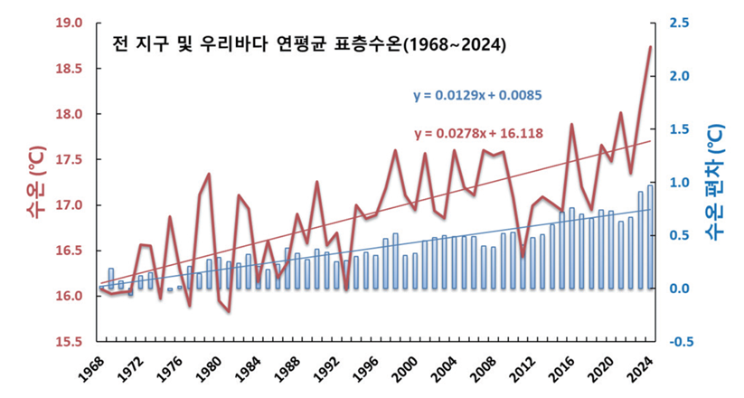
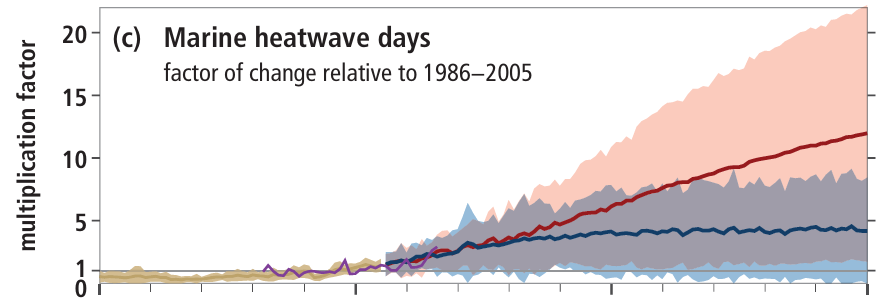
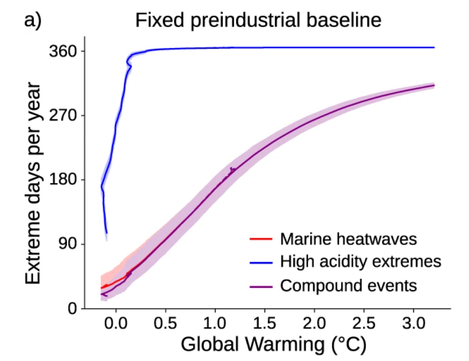
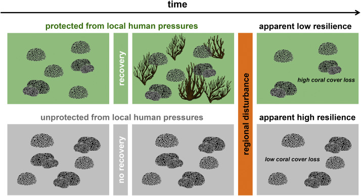
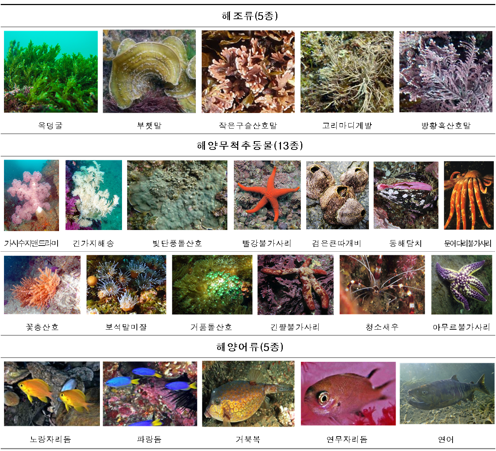
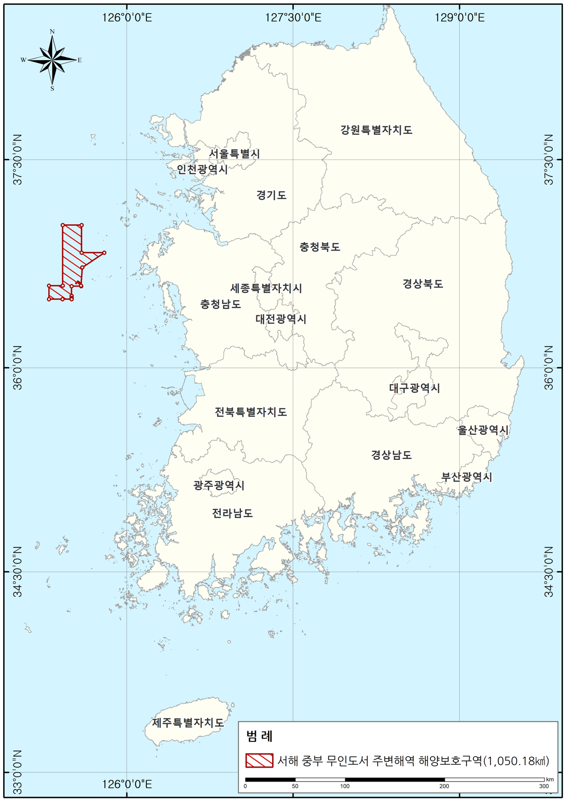
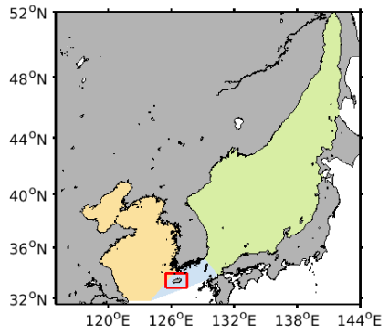
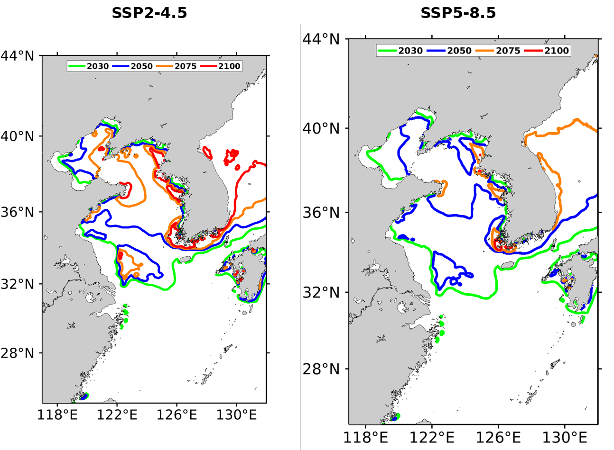
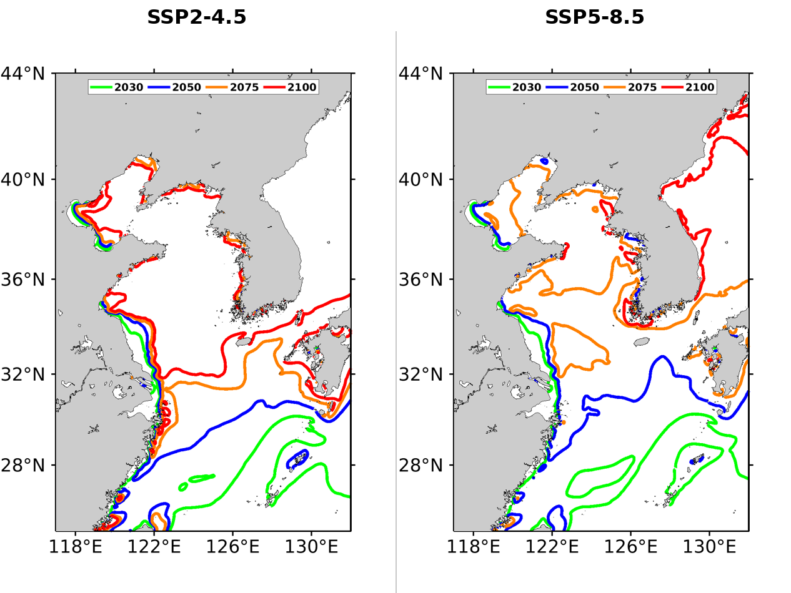

해양보호구역과 보호생물종의 기후변화 적응
제1절 기후위기와 해양보호구역
전 지구적으로 기후변화는 더 이상 미래의 위협이 아닌 현재의 위기로 다가왔다. IPCC 제6차 평가보고서에 따르면, 2011~2020년 기간 동안 지구 표면 온도는 산업화 이전(1850~1900년) 대비 약 1.09°C 상승하였으며, 인간 활동에 의한 온실가스 배출이 이러한 온난화의 주요 원인으로 확인되었다. 특히 2024년은 전 지구 기록상 가장 따뜻한 해로 기록되었으며, 산업화 이전 대비 1.46°C 높은 기온을 나타내어 기후변화의 가속화를 실증적으로 보여주고 있다.
해양은 지구 온난화로 축적된 열의 90% 이상을 흡수하는 거대한 완충 시스템으로 작동하고 있으나, 이로 인해 해양 자체가 전례 없는 변화를 겪고 있다. 국립수산과학원 분석에 따르면 1968년부터 2024년까지 57년간 전 지구 표층 수온이 0.74°C 상승하는 동안 한반도 해역은 1.58°C나 상승하여 전 지구 평균의 2배 이상 빠른 속도로 온난화가 진행되고 있다. 해역별로는 동해가 2.04°C로 가장 높았고 서해 1.44°C, 남해 1.27°C 순이었으며, 이는 대마난류 세력 강화와 여름철 폭염에 따른 성층 강화가 복합적으로 작용한 결과로 분석된다.

수온 상승과 함께 해양열파(Marine Heatwave)의 빈도와 강도 역시 급격히 증가하고 있다. 해양열파란 특정 해역의 수온이 기후학적 평균 대비 상위 10% 이상의 극단적 고온 상태가 5일 이상 지속되는 현상을 의미한다. IPCC 해양 및 빙권 특별보고서(SROCC)에 따르면, 해양열파의 발생 빈도는 1982년 이후 2배로 증가하였으며, 그 강도와 지속 기간도 함께 증가하고 있다. 이러한 추세는 향후 더욱 심화될 것으로 전망되는데, 2081~2100년 해양열파 발생 빈도는 산업화 이전(1850~1900년) 대비 저배출 시나리오(RCP2.6)에서 약 20배, 고배출 시나리오(RCP8.5)에서 약 50배 증가할 것으로 예측된다.

해양산성화 또한 해양생태계를 위협하는 주요 요인으로 부상하고 있다. 해양은 1980년대 이후 인간 활동으로 배출된 이산화탄소의 20~30%를 흡수해왔으며, 이로 인해 해양 표층의 산성화가 지속적으로 진행되고 있다. 현재의 해양산성화 속도는 지난 3억 년 동안 유례가 없는 수준일 가능성이 있다. 지난 100년간 해양 표층 pH는 약 0.1 낮아졌는데, 이는 약 5,600만 년 전 팔레오세–에오세 최대온난기(PETM) 당시보다도 적어도 10배 빠른 속도이다(Hönisch et al., 2012). 최근 연구에서는 해양열파와 해양산성화 극단 현상이 동시에 발생하는 복합 극단 현상(Compound Extreme)이 증가하고 있음이 밝혀졌으며, 이러한 복합 스트레스는 개별 스트레스보다 해양생물에 더 심각한 영향을 미치는 것으로 보고되고 있다(Burger et al., 2022).

우리나라의 경우 2024년 여름 고수온 현상으로 인한 양식업 피해가 1,430억 원에 달해 관련 통계 집계(2012년) 이후 최대 피해액을 기록하였다. 고수온 특보는 2024년 7월 24일 발령되어 10월 2일까지 71일간 지속되었으며, 이 기간 동안 어류 수천만 마리와 멍게·전복 등이 대량 폐사하였다. 이처럼 수온 상승, 해양열파, 해양산성화, 용존산소 감소는 복합적으로 작용하여 해양생태계의 구조와 기능에 심대한 영향을 미치고 있으며, 수산업을 비롯한 연안지역사회의 생계와 삶의 질을 직접적으로 위협하고 있다.
이러한 기후위기 상황에서 해양보호구역(MPA: Marine Protected Area)은 해양생태계 보전과 기후변화 적응을 위한 핵심적인 정책 수단으로 주목받고 있다. 첫째, 보전 기능 측면에서 건강한 생태계를 유지함으로써 기후 스트레스에 대한 저항력(resistance)을 확보하는 데 기여한다. 둘째, 복원 기능 측면에서 잘피밭·해조류 숲·염습지 등 블루카본 생태계를 포함하는 MPA는 탄소 흡수·저장을 통해 기후변화 완화에도 기여할 수 있다. 셋째, 완충 기능 측면에서 종의 이동 경로와 피난처(refugia)를 제공한다. 최근 연구에 따르면 전 지구적으로 기후 피난처로 기능할 수 있는 해양기후 피난처의 면적은 약 1,760만 ㎢에 달하나, 현재 지정된 해양보호구역 중 기후 안정 구역에 위치한 비율은 29%에 불과하다.
그러나 해양보호구역이 만능 해결책은 아니라는 점도 인식할 필요가 있다. 일부 연구에서는 어획 등 인위적 압력으로부터의 보호가 오히려 온난화에 민감한 종의 선택을 초래할 수 있다는 ‘보호 역설(Protection Paradox)’을 지적하고 있다(Bates et al., 2019). 이는 기후변화가 해양생태계의 회복력을 압도하는 상황에서 탄소 배출 저감이 근본적인 해결책임을 시사하지만, 다양한 환경 조건을 포괄하는 MPA 네트워크는 여전히 중요한 적응 전략으로 평가된다.

현재 우리나라에는 습지보호지역 18개소, 해양생태계보호구역 18개소, 해양생물보호구역 3개소, 해양경관보호구역 1개소 등 총 40개소(2026년 7월 기준)의 해양보호구역이 지정되어 있다. 총 면적은 2025년 11월 기준 3,124.7㎢였으나, 2026년 7월 인천 대령도·충남 격렬비열도 주변 해역(1,050.18㎢)이 추가 지정되어 약 4,175㎢로 늘어난 것으로 추산된다. 국제사회에서도 2022년 CBD COP15에서 채택된 쿤밍-몬트리올 글로벌 생물다양성 프레임워크(GBF)가 2030년까지 육상 및 해양의 최소 30%를 보호구역으로 지정하는 ‘30×30’ 목표를 설정하였다. 우리나라도 2030년까지 해양관할권의 30%를 해양보호구역으로 지정하겠다는 목표를 발표하였으나, 현재 지정 비율이 배타적경제수역(EEZ)의 약 1.8%(2025년 4월 기준)에 불과하여 획기적인 노력이 요구된다. 이에 정부는 2025년 제10차 아워오션 콘퍼런스(OOC)에서 30×30 목표 달성을 위해 매년 1,000㎢ 이상의 해양보호구역을 지정하겠다고 공약하였으며, 실제로 2025년 4월 제주 관탈도(1,075.08㎢), 2026년 7월 대령도·격렬비열도 해역(1,050.18㎢)이 잇따라 1,000㎢ 이상 대형 해양보호구역으로 지정되었다.
기후변화 시대에 효과적인 관리를 위해서는 기존의 정적(static) 관리 방식에서 동적(dynamic) 적응관리 방식으로의 전환이 필수적이다. 전통적인 MPA 설계는 생물다양성 보전에 초점을 맞추었으나 기후 회복력을 명시적으로 고려하지 않았다는 한계가 있어, 종 분포 변화 예측·기후 피난처 식별·서식지 연결성 강화 등을 고려한 ‘기후 스마트(climate-smart)’ MPA 설계·관리가 필요하다.
제2절 보호생물종과 해양보호구역 관리
1. 해양보호생물 지정 현황
우리나라 해양보호생물 제도는 「해양생태계의 보전 및 관리에 관한 법률」에 근거하여 운영되며, 동법 제25조는 개체수가 현저히 감소하여 멸종위기에 처하거나 생태계 보전에 중요한 역할을 하는 생물을 해양보호생물로 지정·보호할 수 있도록 규정한다. 2024년 현재 해양수산부가 지정·관리하는 해양보호생물은 총 91종으로, 해양포유류 21종, 무척추동물 36종, 해조류·해초류 7종, 파충류 5종, 어류 6종, 조류 16종이 포함된다.
한편 해양수산부는 2023년 4월 ‘해양생태계 기후변화 지표종’ 23종을 별도로 지정·고시하였다. 이 지표종은 수온 상승에 따른 서식·분포범위 변화, 번식활동 시기 변화, 개체군 변화가 뚜렷하여 기후변화 모니터링에 적합한 생물로 선정되었으며, 해양어류 5종, 무척추동물 13종, 해조류 5종으로 구성된다. 기후변화 지표종 제도는 해양보호생물 제도와 별개로 운영되지만, 양 제도의 상호 연계를 통해 기후변화 대응형 보호생물 관리체계를 구축할 수 있는 잠재력을 지닌다.

2. 해양보호구역의 연계
해양보호구역(MPA)은 해양보호생물의 서식지를 공간적으로 보전하는 핵심 수단이다. 2015~2020년 시행된 국가 해양생태계 종합조사에서는 총 7,919종의 해양생물이 확인되었으며, 갯벌에 서식하는 대표 해양보호생물 8종(달랑게, 눈콩게 등)의 분포 현황이 면밀히 파악되어 보호구역 후보지 발굴의 기초자료로 활용되고 있다. 정부는 30×30 목표 달성을 위해 매년 1,000㎢ 이상의 해양보호구역을 새로 지정하기로 하였으며, 이에 따라 소규모 연안·갯벌 중심이던 지정 양상이 무인도서 주변 해역 등 대규모 해역으로 확대되고 있다.

그러나 현행 제도에서 해양보호생물과 해양보호구역 간의 공간적 중첩·관리 연계 현황은 체계적으로 분석되지 못한 실정이다. 수온 상승에 따라 보호생물의 서식 적합 범위가 변화하면 기존 보호구역의 보전 효과가 감소할 수 있으므로, 서식지와 보호구역 경계의 정합성을 주기적으로 평가하고 기후변화 시나리오에 기반한 적응적 관리가 필요하다.
3. 관련 법령 연계
해양생태계 보전 관련 국내 법령은 해양생태계법 외에도 「자연공원법」, 「습지보전법」, 「야생생물 보호 및 관리에 관한 법률」 등이 있다. 문제는 이들 법령 간 보호대상 생물의 정의와 범위가 상이하다는 점이다. 기후에너지환경부(구 환경부) 소관 야생생물법은 ‘멸종위기 야생생물’을 I·II급으로 구분해 관리하는 반면, 해양수산부 소관 해양생태계법은 ‘해양보호생물’을 별도로 지정한다. 두 제도 간 중복 지정된 종(상괭이, 점박이물범 등)도 존재하지만 관리 주체와 규제 내용이 상이하여 현장에서의 통합적 보호 조치가 어려운 경우가 발생한다. 또한 밍크고래처럼 야생생물법상 국제적 멸종위기종 목록에는 포함되나 해양보호생물로는 지정되지 않아 혼획 개체의 유통이 허용되는 등 제도 간 공백도 존재한다. 종합적 적응전략 수립을 위해서는 관계 부처 간 협력체계 강화와 법령 간 정합성 제고가 선행되어야 한다.
4. 기후변화 대응 연구 필요성
① 생리적 내성 범위 규명 — 해양변온동물은 산소공급 능력에 의해 열 내성이 제한되며, 육상 변온동물보다 상위 열 한계에 더 가깝게 생활하여 온난화 취약성이 높다(Pinsky et al., 2019). 국내 해양보호생물 91종에 대한 임계열최대·최소, 열적 안전역 연구가 필요하다.
② 서식지 적합성 변화 예측 모델링 — IPCC AR6은 해양생물이 온난단(warm edge)에서는 감소하고 한랭단(cool edge)에서는 확대되는 분포역 이동(range shift)을 보고하였다. 생리적 성능곡선을 통합한 생리-SDM 등 정교한 예측 도구를 활용한 연구가 요구된다.
③ 종별 취약성 평가 체계 구축 — 취약성은 노출(exposure)·민감도(sensitivity)·적응능력(adaptive capacity)의 함수로 정의되며, 지리적 분포 범위·열 내성·생활사 특성·먹이 특이성·이동성 등의 형질이 평가에 반영되어야 한다.
④ 적응전략 수립을 위한 과학적 근거 마련 — 서식지의 열적 편향(thermal bias)에 따라 군집의 취약성이 달라지므로, 보호생물 종별 기후변화 취약성에 대한 과학적 근거가 체계적으로 축적되어야 한다. 국립생물자원관은 2010년부터 ‘국가 기후변화 생물지표종’ 100종을 선정·관리해오고 있으며, 2024년 9월에는 최신 분포·서식 변화를 반영하여 지표종 중 25종을 교체한 바 있다.
제1절 해외 연구 동향
1. 수온상승에 따른 해양보호종 및 서식지 변화 연구
1) 전 지구적 해양생물 분포 이동(poleward shift) 연구
산업화 이전 대비 해양 평균 수온이 약 1°C 상승함에 따라, 해양생물은 생리적 열적 내성 범위를 유지하기 위해 극방향(poleward)으로 이동하는 경향을 보인다. Hastings 등(2020)은 식물플랑크톤부터 어류, 해양포유류에 이르는 광역분포 해양생물 304종을 분석하여, 분포역의 극방향 경계에서는 개체수가 증가하고 적도 방향에서는 감소하는 패턴이 전 지구적으로 나타남을 확인하였다.
해양생물의 이동 속도는 육상생물보다 현저히 빠르다. Poloczanska 등(2013)의 메타분석에 따르면 해양생물 분포역의 선행 경계(leading edge)는 10년당 평균 72±13.5km의 속도로 극방향 이동하고 있으며, 이는 육상생물의 10년당 6.1km보다 약 10배 이상 빠르다. 특히 이동성과 분산력이 큰 부유생물에서 확장 속도가 가장 빨라, 선행 경계가 10년당 식물플랑크톤은 약 470km, 경골어류는 약 278km, 무척추 동물플랑크톤은 약 142km 이동한 것으로 나타났다. 이러한 차이는 해양환경에 물리적 장벽이 적고, 해양생물의 열적 내성 범위가 육상생물보다 좁아 수온 변화에 더 민감하게 반응하기 때문으로 해석된다. Pinsky 등(2020)은 수온·산소 농도의 시공간적 모자이크가 국지적 피난처(refugia)를 형성하며, 종 간 상호작용과 서식지 가용성이 분포 이동의 속도와 범위를 조절한다고 보았다. 종 다양성과 포식자 밀도가 높게 유지되는 해양보호구역이 기후변화 적응에서 수행할 수 있는 역할에 대한 관심도 커지고 있다.
2) 열대화(tropicalization) 및 탈한대화(deborealization) 사례
분포 이동은 군집 구성의 변화로 이어진다. McLean 등(2021)은 북반구 전역의 어류 장기 모니터링 자료를 이용하여 군집온도지수(CTI)의 변화를 열대화·탈한대화·한대화·탈열대화의 네 과정으로 분해하였다. 그 결과 CTI는 조사지점의 72%에서 증가하였고, 이 중 31%는 주로 냉수성 종의 감소(탈한대화)에 기인한 것으로 나타나, 난수성 종의 증가가 우세하지만 보편적이지는 않았다.
열대화는 서식지 형성종의 붕괴로 이어지기도 한다. Vergés 등(2014)은 서부경계류에 의해 형성된 온난화 핫스팟인 일본 남부, 지중해 동부, 호주 연안에서 열대성 초식어류의 분포가 확장되어 해조숲의 황폐지로의 상전이를 촉진하였음을 보고하였다. 서호주 연안에서는 2011년 해양열파 이후 켈프숲이 광범위하게 소실되고 열대·아열대성 생물로 대체되는 ‘군집 수준의 열대화’가 관찰되었다(Wernberg et al., 2016). 유럽 해역의 40년간 65개 생물다양성 시계열(1,817종) 분석에서도 열대화(54%)와 탈한대화(18%)가 뚜렷하게 확인되었으며, 지중해·발트해 등 반폐쇄성 해역은 물리적 장벽으로 난수성 종의 유입이 제한되어 가장 빠른 온난화 속에서도 탈한대화를 통한 생물다양성 손실에 특히 취약한 것으로 나타났다(Chust et al., 2024).
2. 생리적 임계온도·분포전이·군락붕괴 분석사례
1) 미국 — 황소켈프숲 붕괴
미국 북캘리포니아에서는 2013년 해성병(Sea Star Wasting Syndrome)으로 성게의 주요 포식자인 해바라기불가사리(Pycnopodia helianthoides)가 기능적으로 멸종하였다. 여기에 2014~2016년 해양열파(‘The Blob’)와 엘니뇨에 따른 수온 상승·영양염 고갈이 겹치면서, 350km 이상의 해안선에서 황소켈프(Nereocystis luetkeana) 캐노피가 90% 이상 감소하고 자주성게 황폐지로 전환되었다(Rogers-Bennett & Catton, 2019). 그 결과 세계 최대 규모였던 북캘리포니아 전복 휴양 어업이 2018년 폐쇄되었고(추정 가치 4,400만 달러), 홍성게 상업 어업도 붕괴되었다. 위성영상 분석에서도 샌프란시스코 북부 해역의 켈프숲 면적이 95% 이상 감소한 것으로 확인되었다(McPherson et al., 2021). 반면 해달이 서식하는 몬터레이만에서는 켈프숲과 황폐지가 혼재하는 환경에서 성게를 전문적으로 섭식하는 해달이 늘고 성게 섭식량이 증가하여, 포식자의 생태적 기능이 기후 회복력에 기여할 수 있음을 시사하였다(Smith et al., 2021).
2) 일본 — 이소야케(磯焼け)
일본에서는 해조 군락의 감소·소실로 인한 황폐지 형성을 ‘이소야케’로 지칭하며, 성게·초식어류의 섭식, 고수온 고사, 퇴적물에 의한 정착 억제, 폭풍에 의한 이탈 등 복합 요인으로 발생한다. 일본 수산청은 2007년 ‘이소야케 대책 가이드라인’을 발간하였다. Tanaka 등(2012)은 고치현 연안(해안선 700km 이상) 40년 자료를 분석하여 쿠로시오 해류의 영향으로 연평균 해수면온도가 10년당 0.3°C 상승하였으며, 온대성 해조류의 분포역은 축소되고 열대성 모자반류의 분포역은 확장되었음을 확인하였다. 남서부 일본의 감태(Ecklonia cava) 개체군은 1990년대 이후 급격히 감소하여 2000년까지 일부 개체군이 완전히 사라졌다. Takao 등(2015)은 4개 RCP 시나리오에서 고수온 스트레스와 초식어류(Siganus fuscescens)의 섭식 영향을 함께 평가하여, 감태의 분포가 극방향으로 이동하되 그 정도는 시나리오에 따라 크게 달라질 것으로 전망하였다. 또한 초식어류의 켈프 섭식은 감태의 번식기인 가을에 최고조에 달해 장기적인 켈프숲 쇠퇴에 기여할 수 있는 것으로 나타났다(Terazono et al., 2022).
3) EU — 지중해 포시도니아·냉수산호
지중해 고유 잘피인 포시도니아(Posidonia oceanica)는 알려진 분포 면적 약 122만 헥타르 가운데 과거 50년간 약 34%가 퇴행한 것으로 추정된다(Telesca et al., 2015). 퇴행의 주요 원인은 연안 개발·저인망 어업·양식업 등 국지적 인위 압력이었으나, 최근에는 기후변화가 새로운 위협으로 대두되고 있다. 종분포모델 예측에 따르면 RCP 8.5 시나리오에서 포시도니아는 2050년까지 적합 서식지의 75%를 잃고 2100년까지 기능적 멸종 위험에 처할 수 있다(Chefaoui et al., 2018). 온난화가 빠른 동지중해에서는 그리스 해역 60개 초지의 1997~2018년 생산성을 재구성한 결과 20년간 생산성이 감소하였으며, 연평균 해수면온도 20°C 초과와 8월 해수면온도 26.5°C 초과가 이러한 감소와 관련된 것으로 나타났다(Litsi-Mizan et al., 2023). 대서양 심해(200~1,000m 이상)의 냉수산호 역시 아라고나이트 포화 수심 상승으로 골격 형성이 저해될 위험에 놓여 있으며, EU는 ATLAS·iAtlantic 프로젝트를 통해 관련 과학적 기반을 구축하고 있다.
4) 호주 — 대보초(GBR) 대규모 백화
약 3,000개의 암초로 이루어진 호주 대보초는 1998·2002·2016·2017·2020·2022·2024·2025년에 대규모 백화를 겪었으며, 이 중 6회가 2016년 이후 10년 이내에 집중되었고 2016~2017년과 2024~2025년에는 2년 연속 백화가 발생하였다(AIMS, 2025). 2016년 백화는 역사상 가장 극심하여 대보초 전체 산호의 약 22%가 폐사하였으며, 폐사의 약 85%가 케이프요크에서 리저드섬 북쪽에 이르는 극북부 해역에 집중되었다(GBRMPA, 2017). Cheung 등(2021)은 2016·2017·2020년의 누적 백화로 대보초 전체의 유생 공급량이 각각 26%, 50%, 71% 감소하였으며, 심각한 백화를 겪은 암초의 75%가 유생 공급량의 80~100%를 잃어 자연적 재가입을 통한 회복이 점점 어려워지고 있다고 분석하였다. NOAA Coral Reef Watch는 1997년부터 Degree Heating Week(DHW) 지표를 산출하여 백화 경보를 제공하는데, 4°C-주에서 백화 위험이, 16°C-주 이상에서 산호의 50% 이상이 폐사하는 심각한 다종 폐사가, 20°C-주 이상에서는 80% 이상이 폐사하는 거의 완전한 폐사가 예측된다.
3. 냉수성 해조·산호·잘피 복원사업 중심의 적응형 MPA 관리 연구
1) 해양보호구역 모니터링을 통한 회복력 검증
해양보호구역이 기후변화에 실제로 회복력을 제공하는지에 대한 검증 연구도 이루어지고 있다. Bates 등(2019)은 해양보호구역이 어업 압력 등 국지적 스트레스 저감에는 효과적이나 수온 상승이라는 전 지구적 스트레스에 대한 직접적 완충 효과는 제한적이라고 지적하며, 특정 압력으로부터의 보호가 오히려 온난화에 민감한 종을 선택할 수 있다는 ‘보호의 역설(Protection Paradox)’을 제시하였다. 다만 충분한 고품질 모니터링 자료가 축적되면 실제로 존재하는 회복력 신호를 식별할 수 있으며, 다양한 보호구역으로 구성된 네트워크는 기후 피난처를 포함하고 개별 보호구역의 손실에 대한 보험 기능을 할 수 있다고 평가하였다.
캘리포니아 중부 해안에서는 2014년 성게 대발생 이후 켈프숲 잔존 패치와 성게 황폐지가 모자이크를 이루고 있다. 14년간의 조하대 모니터링 자료 분석 결과, 기존의 생태적·환경적 조건과 성게의 행동이 복합 스트레스 속에서 켈프숲의 잔존 여부를 설명하는 요인으로 나타났다(Smith, Malone & Carr, 2024). 호주 AIMS의 장기모니터링 프로그램은 39년간 대보초의 산호 피복도를 추적하고 있다(2024/25년 조사 기준 124개 암초). 2023/24년 조사에서는 대형 교란이 적었던 기간 동안 피복도가 회복되어 북부·중부 지역이 모니터링 역사상 최고 수준에 도달하였으나, 2024/25년 조사에서는 대규모 백화와 사이클론의 영향으로 피복도가 북부 39.8%→30.0%, 중부 33.2%→28.6%, 남부 38.9%→26.9%로 급감하여 북부와 남부는 관측 이래 최대 연간 감소폭을 기록하였다(AIMS, 2025). 이는 백화의 빈도와 강도가 증가하면서 ‘회복의 창(window for recovery)’이 짧아지고 있음을 보여준다.
2) 기후 회복력 있는 종·유전형 선발(보조진화)
van Oppen 등(2015)은 산호의 기후 회복력 강화를 위한 ‘보조진화(assisted evolution)’ 전략으로 선발 육종, 스트레스 순화, 공생 조류(Symbiodiniaceae) 조작, 미생물군집 조작을 제안하였다. 호주 CSIRO·AIMS 연구팀은 15년 이상의 이식·교배 실험을 통해 북부의 자연적으로 더 따뜻한 암초 출신 산호가 고온에서 생존할 확률이 26배 높음을 확인하였으며, Quigley 등(2019)은 자연적인 유전자 흐름으로는 적응 형질이 확산되기까지 30세대 이상이 필요해 보조유전자흐름(AGF)이 필요함을 논증하였다.
3) 인공 서식지 조성 및 MPA 관리 체계로의 통합
호주의 Reef Restoration and Adaptation Program(RRAP)은 대보초의 기후 회복력 강화를 위해 43개 중재 기술을 평가하였다. DeFilippo 등(2022)은 단순 보충 이식은 기후 회복력 이점이 제한적인 반면, 보조진화를 통해 열 내성을 3°C 향상시킨 산호를 도입할 경우 유의미한 개선이 가능함을 확인하였다. 복원을 해양보호구역 관리 체계 안에 통합하는 사례도 늘고 있다. 미국 Greater Farallones 국립해양보호구역은 북캘리포니아 켈프숲 붕괴에 대응하여 보호구역 내 핵심 지역에서 성게 제거와 켈프 복원 사업을 상업 어업인·원주민 부족·연구기관·시민과학자와 함께 추진하고 있다. 대보초해양공원은 용도구역(zoning) 체계 안에서 백화 피해 지역과 자연 회복 잠재력이 높은 지역을 구분하여 복원 투자의 비용-효과성을 높이고 있다. Cheung 등(2021)은 심각한 백화를 겪었더라도 유생 공급이 여전히 높은 암초(약 2%, 30개)는 자연 회복이 가능하여 복원의 비용-효과성이 낮으나, 대보초의 13%는 유의한 온난화를 피한 잠재적 피난처로서 전체의 58%에 유생을 공급할 수 있어 개입 대상을 공간적으로 선별하는 것이 중요하다고 강조하였다.
제2절 기후적응형 MPA 정책 동향
1. IUCN, CBD, IOC-UNESCO의 30×30 및 적응형 관리 지침
2022년 12월 캐나다 몬트리올에서 열린 CBD 제15차 당사국총회(COP15)에서 채택된 쿤밍-몬트리올 글로벌 생물다양성 프레임워크(GBF)는 2030년까지 달성해야 할 23개 실천목표를 제시하였다. 이 중 목표3(Target 3)은 이른바 ‘30×30 목표’로, 2030년까지 전 세계 육상·내수면·연안·해양의 최소 30%를 생태적으로 대표성 있고 잘 연결되며 공평하게 관리되는 보호구역 및 기타 효과적인 지역기반 보전조치(OECMs)를 통해 효과적으로 보전·관리할 것을 요구한다. 그러나 현재 전 세계 해양의 약 8%만이 보호구역으로 지정되어 있고 완전히 또는 고도로 보호되는 해역은 2.7%에 불과하여, 목표 달성을 위해서는 매년 약 1,300만㎢(프랑스 면적의 약 23.5배)에 해당하는 MPA를 새로 지정해야 하는 실정이다.
CBD는 생태계 기반 적응(Ecosystem-based Adaptation, EbA)을 ‘기후변화의 부정적 영향에 대한 인간의 적응을 지원하기 위해 생물다양성과 생태계 서비스를 활용하는 것’으로 정의하며, 자연기반해법(NbS)의 핵심 구성요소로 자리매김시켰다. EbA 관점에서 MPA는 기후변화 적응과 완화를 위한 ‘후회 없는(no-regret)’ 전략이자 비용효과적인 도구로 평가되며, 통합연안관리(ICZM)·해양공간계획과 결합하여 지속가능발전·생물다양성 보전·기후적응을 동시에 달성할 수 있다.
IUCN 세계보호지역위원회(WCPA)가 2025년 발표한 「기후변화 시대의 MPA 설립」 기술보고서는 ① 변화 이해, ② 적응과 회복력 강화, ③ 형평성과 포용성 확보, ④ 통합적 편익 창출의 네 원칙을 권고하며, 적용 대상을 신규·확대 MPA뿐 아니라 OECM과 원주민 보전지역까지 포괄한다. IUCN의 MPA 글로벌 보전 표준(2018)은 MPA가 기후변화 영향을 포함한 위협 요인을 지속적으로 평가하고 적응적 관리 조치를 이행할 것을 요구하며, 맹그로브·잘피·염습지 등 연안 탄소 서식지를 엄격히 보호할 경우 탄소 배출 방지와 새로운 탄소 격리 촉진이 가능함을 강조한다.
IOC-UNESCO는 EU DG MARE와 공동으로 2021년 「MSPglobal 국제 해양공간계획 가이드」를 발표하여 ‘기후스마트 MSP(climate-smart Marine Spatial Planning)’ 개념을 제시하였으며, 2022년에는 「MSP 프로세스 가속화를 위한 공동 로드맵(2022–2027)」을 채택해 2030년까지 MSP 적용 해역을 3배로 확대하는 목표를 설정하였다. 또한 IUCN·Conservation International·IOC-UNESCO가 공동 주도하는 블루카본 이니셔티브는 연안 탄소 생태계의 보전·복원을 위한 관리 접근법과 재정 인센티브를 개발하고 있다. 블루카본 생태계(맹그로브·잘피초원·조간대 염습지)는 전 세계적으로 약 4,900만 헥타르를 차지하며, 토양 상층 1m의 탄소 저장량은 맹그로브 약 280 MgC/ha, 조간대 습지 250 MgC/ha, 잘피초원 140 MgC/ha 수준으로 보고된다. 세계은행에 따르면 맹그로브 1헥타르 복원의 평균 기후완화 효과는 같은 면적의 육상 산림 복원보다 5배 이상 높으며, 잘피 복원은 약 3배, 염습지 복원·보전은 약 2배의 효과가 있는 것으로 제시된다.
2. 유럽연합(EU) — MSFD, Natura 2000 기반 MPA-기후통합정책
EU 해양전략기본지침(MSFD, 2008)은 생물다양성, 비토착종, 상업어종 등 11개 기술기준(descriptors)을 통해 ‘좋은 환경상태(GES)’ 달성·유지를 목표로 하며, 회원국들은 6년 주기의 적응적 관리 사이클을 통해 이를 이행한다. 그러나 유럽위원회가 2025년 3월 발표한 평가에 따르면 2020년까지 모든 EU 해역의 GES 달성이라는 핵심 목표는 이루지 못하였고, 이에 위원회는 2025년 12월 MSFD 개정을 위한 의견수렴에 착수하여 유럽해양협약(European Ocean Pact) 및 해양법(Ocean Act) 준비와 연계해 추진하고 있다.
Natura 2000은 27개 회원국의 육상·해양을 포괄하는 EU 최대 보호구역 네트워크로, 유럽위원회는 2013년 「Natura 2000과 기후변화에 관한 가이드라인」을 통해 정태적 보전에서 적응적 관리로의 전환을 제시하였다. 그러나 특정 사이트에서 고정된 종·서식지 목록을 보호하도록 설계되어 동적 관리에 제약이 있다는 지적이 이어지고 있으며, 전 세계 영어권 MPA 관리계획을 분석한 연구에서는 2010년 이후 발간된 계획 중 기후변화 관련 용어를 하나라도 포함한 것이 57%에 불과하였다(O’Regan et al., 2021). 이에 대응해 프랑스 자연보전지역연합과 EUROPARC 연맹은 LIFE Natur’Adapt 프로젝트(2018~)를 통해 프랑스 내 6개 시범지역·15개 검증지역에서 적응적 관리 방법론을 개발·검증하고, 유럽 보호구역 관리자를 위한 기후변화 적응 툴킷을 보급하였다.
2020년 채택된 ‘EU 생물다양성전략 2030’은 2030년까지 EU 육상·해양의 30%를 법적으로 보호하고 이 중 최소 1/3(10%)을 엄격히 보호할 것을 목표로 한다. 해양 MPA 면적은 2012년 4.15%에서 2023년 13.7%로 3배 이상 확대되었으나, 유럽환경청은 현재 속도로는 30% 목표 달성이 어려울 것으로 평가하고 있다. 2023년 2월 유럽위원회가 채택한 「해양생태계 보호·복원 및 지속가능한 어업을 위한 행동계획」은 회원국이 명확한 일정에 따라 MPA 내 어업보전조치를 수립하고, 2030년까지 모든 MPA에서 이동식 저층어구를 단계적으로 퇴출하도록 권고한다.
3. 미국
미국은 2021년 1월 행정명령 제14008호(Tackling the Climate Crisis at Home and Abroad)를 통해 2030년까지 육지·수역의 최소 30%를 보전하는 ‘America the Beautiful’ 목표를 제시하였으나, 이 행정명령은 2025년 1월 행정명령 제14148호로 폐지되어 연방 차원의 30×30 정책 추진 동력은 약화되었다. 이에 따라 미국의 기후적응형 MPA 정책은 국립해양보호구역을 관리하는 연방기관과 주정부 차원에서 주로 이루어지고 있다.
NOAA 국립해양보호구역국(Office of National Marine Sanctuaries)은 각 보호구역이 관리하는 자원·생태계서비스의 기후변화 취약성을 평가하여 관리계획 개정에 반영하고, MPA 실무자를 위한 평가 가이드와 워크시트도 보급한다. 북캘리포니아의 Greater Farallones·Cordell Bank 국립해양보호구역은 2015년 취약성 평가를 바탕으로 크릴·켈프·하구 등 주요 자원의 취약성을 분석하여 기후행동계획을 수립하였으며, 이러한 평가는 Flower Garden Banks, Gray’s Reef, American Samoa, Papahānaumokuākea 등으로 확대되었고 2025년에는 Olympic Coast 국립해양보호구역도 취약성 평가를 완료하였다. NOAA는 국립해양보호구역을 기후변화·해양산성화 영향을 관측하는 감시거점(sentinel site)으로도 활용하고 있다.
주정부 차원에서는 캘리포니아주가 대표적이다. 캘리포니아주는 2020년 주지사 행정명령(N-82-20)으로 2030년까지 주의 육지·연안 수역의 30%를 보전하는 목표를 설정하였으며, 현재 124개 MPA가 주 해역의 약 16%(약 852제곱마일)를 보호하고 있다. 캘리포니아 해양보호위원회(OPC)는 MPA 네트워크의 적응적 관리, 연방 국립해양보호구역 내 생물다양성 보호 강화, MPA 외 공간관리 수단 활용, 원주민 주도 보전 지원의 네 전략을 검토하고 있으며, 2021년 OPC 과학자문단은 「기후 회복력과 캘리포니아 MPA 네트워크」 보고서를 통해 과학적 지침을 제시하였다. 해양생물보호법(MLPA)에 따라 10년마다 실시하는 MPA 네트워크 정기평가(Decadal Management Review)의 첫 결과는 2023년 초 공개되었으며, 네트워크의 기후 회복력 가능성을 확인하고 향후 10년간의 적응적 관리를 위한 28개 권고사항을 제시하였다.
국제기구·유럽연합·미국의 정책 동향은 세 가지 공통 방향을 보여준다. 첫째, 30×30 목표를 계기로 해양보호구역의 양적 확대가 추진되고 있으나, 전 세계 비율은 여전히 약 8%에 머물러 목표와 실제 지정 사이의 간극이 크다. 둘째, 면적 확대만으로는 기후변화에 대응할 수 없다는 인식이 확산되어, 각국은 취약성 평가와 정기 평가를 통해 관리계획을 주기적으로 개정하는 적응적 관리로 전환하고 있다. 셋째, 블루카본과 자연기반해법을 매개로 보호구역을 기후변화 완화·적응 정책과 연계하는 흐름이 뚜렷하다. 이는 보호구역을 한 번 지정하고 유지하는 대상이 아니라, 과학적 모니터링과 평가 결과에 따라 지속적으로 조정해 나가는 관리 체계로 보는 시각이 자리 잡고 있음을 보여준다.
제1절 MPA 관리 및 연구 현황
1. 국내 해양보호구역 현황
1) 지정·관리 현황
국내 해양보호구역은 근거 법률과 관리 목적에 따라 여러 유형으로 지정·관리되고 있다. 「해양생태계의 보전 및 관리에 관한 법률」(이하 해양생태계법)에 따른 해양생태계보호구역·해양생물보호구역·해양경관보호구역과 「습지보전법」에 따른 연안습지보호지역(갯벌)을 통칭하여 해양보호구역이라 하며, 이와 별도로 「자연공원법」에 따른 해상·해안국립공원도 해양생태계 보전 기능을 수행한다. 서천·고창·신안·보성-순천 갯벌은 2021년 유네스코 세계자연유산으로 등재되어 국제적 보전 가치를 인정받았다.
해양보호구역은 매년 1~2개소씩 신규 지정되어 왔으며, 2026년 7월 인천 대령도·충남 격렬비열도 주변 해역(1,050.18㎢)이 2025년 4월 제주 관탈도(1,075.08㎢)에 이어 두 번째 1,000㎢ 이상 대형 해양보호구역으로 지정되었다. 이로써 국내 해양보호구역은 습지보호지역 18개소, 해양생태계보호구역 18개소, 해양생물보호구역 3개소, 해양경관보호구역 1개소 등 총 40개소가 되었다.
| 유형 | 개소 | 근거법률 | 관리기관 |
|---|---|---|---|
| 습지보호지역(연안습지) | 18 | 습지보전법 | 해양수산부 |
| 해양생태계보호구역 | 18 | 해양생태계법 | 해양수산부 |
| 해양생물보호구역 | 3 | 해양생태계법 | 해양수산부 |
| 해양경관보호구역 | 1 | 해양생태계법 | 해양수산부 |
| 해양보호구역 계 | 40 | – | – |
| (참고) 해상·해안국립공원 | 4 | 자연공원법 | 기후에너지환경부(국립공원공단) |
해양보호구역 총 면적은 2025년 11월 기준 3,124.7㎢였으며, 2026년 7월 대령도·격렬비열도 해역이 추가되어 약 4,175㎢로 늘어난 것으로 추산된다. 그러나 해양관할권(EEZ) 대비 비율은 2025년 4월 기준 약 1.8%에 불과하여 GBF의 30×30 목표와는 큰 격차가 있으며, 이에 정부는 2025년 제10차 아워오션 콘퍼런스(OOC)에서 30×30 목표 달성을 위해 매년 1,000㎢ 이상의 해양보호구역을 지정하겠다고 공약하였다.
해양보호구역의 지역 분포는 갯벌·다도해 경관이 발달한 서해안·남해안에 집중되어 있으며, 서해(황해 광역해양생태계) 해역의 보호구역은 국내 해양보호구역 면적의 약 50%를 차지하는 것으로 분석된다. 반면 동해안은 냉수성 생태계와 고유 생물종의 보전 가치에도 불구하고 상대적으로 지정이 미흡하다. 최근 포항 호미반도, 울진 나곡리, 제주 관탈도 등 동해·제주 해역의 지정이 늘고 있으나, 기후변화에 따른 동해 생태계 변화 모니터링과 냉수성 종 피난처 보전을 위해 동해안 해양보호구역 확대가 여전히 필요하다. 해양수산부는 해양보호구역·연안습지보호지역을, 기후에너지환경부는 국립공원공단을 통해 해상·해안국립공원을, 지방자치단체는 현장 관리·불법행위 단속 등을 각각 분담한다.
2) 국가해양생태공원 제도
2022년 12월 해양생태계법 개정으로 해양보호구역과 그 인근을 보전과 지속가능한 이용을 위해 관리하는 ‘국가해양생태공원’ 제도가 도입되었다. 2025년 12월 포항 호미반도, 충남 가로림만, 전남 신안·무안, 전남 여자만 등 4곳이 첫 국가해양생태공원으로 지정되었으며, 공간은 핵심보전구역(해양보호구역), 완충구역(해상 1㎞, 조사·연구 및 해역관리), 지속가능이용구역(육상 500m, 관찰시설·보전관 등 설치)의 3단계로 관리된다. 기존 해양보호구역 관리가 경계 내부의 행위 제한에 집중되었던 것과 달리, 보호구역 바깥에 완충구역과 이용구역을 함께 설정하여 관리 범위를 주변 해역과 육상으로 넓혔다는 점이 특징이다. 첫 지정지 4곳 중 가로림만·신안·무안·여자만은 갯벌 중심, 호미반도는 동해안 암반·해초 서식지 중심으로 구성되어 있어, 보호구역의 지역 수용성을 높이는 방향으로 관리체계가 확장되고 있음을 보여준다.
2. 기후변화 관련 조사 및 정책 연계
해양수산부는 해양생태계법 제10조에 따라 국가해양생태계종합조사를 실시한다. 우리 해역을 두 권역으로 나누어 2년 주기로 전반적인 생태계 현황을 조사하고 핵심 해역은 매년 조사하며, 2015~2020년 조사에서는 해양생물 7,919종이 확인되고 수온 상승에 따른 서식 한계선의 북상이 관측되었다. 다만 현행 조사는 현황 파악 중심으로 설계되어 기후변화 영향을 추적할 장기 시계열 자료 축적과 표준 지표 마련에는 한계가 있다.
해양환경공단은 해양환경측정망을 통해 연안 356개 정점에서 연 4회(2·5·8·11월) 표층·저층 수질과 pH·용존산소·엽록소 등을 측정하지만, 측정 정점이 해안선에서 약 6㎞ 이내에 위치해 해양보호구역과 반드시 일치하지는 않는다. 실제로 2010~2020년 자료 분석에서는 한국 연안 pH가 뚜렷한 감소 추세를 보이지 않았는데, 이는 연안 pH가 대기 중 이산화탄소보다 육상 유입 등 지역적 요인의 영향을 더 크게 받기 때문으로 해석된다. 한국해양과학기술원(KIOST)은 해수면 상승·수온 변화·해양산성화·해양열파 등 물리·화학적 환경 변화와 해양생물 분포 변화를 연구해왔으나, 연구 결과가 보호구역 관리정책에 체계적으로 반영되는 환류 체계는 아직 미흡하다. 국립해양생물자원관은 해양보호생물의 분포·서식지·개체군 현황을 조사해 데이터베이스를 구축·운영하고 있으나, 기후변화에 따른 분포 변화·개체군 동태를 추적하는 장기 모니터링 체계는 구축 초기 단계에 있다.
3. 보호생물종 서식지 모니터링 체계
해양보호생물의 서식지 모니터링은 해양수산부, 해양환경공단, 국립해양생물자원관, 국립수산과학원 등 여러 기관에서 분산적으로 수행되며, 분류군·서식지 유형별로 조사 항목과 주기가 다르다. 백령도 점박이물범은 해양수산부가 2006년부터 ‘서식실태조사’를 실시하며, 개체마다 고유한 반점 패턴을 대조하는 사진 개체식별에 2020년부터 인공지능 식별 프로그램을 도입해 분석 효율을 높였다. 제주 남방큰돌고래는 국립수산과학원 고래연구소가 선박·육상조사로 출현 자료를 축적해 서식 분포·적합 서식지 분석에 활용하고 있다. 바다거북류는 어업인·해양경찰의 혼획·좌초 신고로 현황을 파악해왔으며 2009년부터 CCTV 모니터링이 도입되었고, 국립해양생물자원관은 방류한 바다거북 3종 29개체의 인공위성 위치추적 정보를 공개하고 있다. 해조류·해초류 서식지는 수중 조사로 분포 면적·피도를 측정하며, 제주 연안에서는 시민단체 모니터링을 통해 고수온에 따른 연산호 이상 폐사가 확인되기도 하였다(녹색연합, 2022).
현행 모니터링은 현재 시점의 분포·개체수 파악에 초점을 맞추어 장기 변화 추세 파악이 어렵다. 서식지 환경 지표(수온·염분·용존산소·pH 연속 측정), 생물 반응 지표(분포역 경계·출현 시기·번식 성공률·성장률·폐사율), 서식지 상태 지표(백화·갯녹음·잘피 쇠퇴)가 함께 관측되어야 하나 연계 분석과 장기 시계열 축적은 미흡하다. 해양수산부는 2023년 4월 해양생태계 기후변화 지표종 23종(해조류 5종·무척추동물 13종·어류 5종)을 지정해 전문가·시민 모니터링 자료집을 배포하였으나, 이 지표종 관찰은 해양보호생물 모니터링과 별도로 운영되어 집중 모니터링 체계가 부재하다. 국립해양생물자원관의 해양생명자원통합정보시스템(MBRIS)은 출현기록·분류정보·위치정보를 OBIS·GBIF 등 국제 데이터베이스에도 제공하지만, 해양환경정보포털 등 기관별 정보시스템이 따로 운영되어 환경 관측 자료와 생물 모니터링 자료가 연계되지 못하고 조사 방법·자료 형식·분류 체계도 사업별로 달라 통합 분석이 어렵다. NOAA 국립해양보호구역국의 기후변화 취약성 평가, 캘리포니아주의 MPA 장기 모니터링·10년 주기 정기평가처럼 모니터링 결과를 관리계획에 환류하는 체계를 참고하여, 국내에서도 모니터링 자료의 통합 관리와 기후변화 지표 표준화, 자료 공개 확대가 필요하다.
제2절 관리정책 및 제도
1. 관련 계획 및 정책
해양수산부는 2021년 12월 해운·항만, 수산·어촌, 해양에너지, 블루카본 등 분야별 이행 경로를 담은 「해양수산분야 2050 탄소중립 로드맵」을 수립하였다. 해운 부문은 저탄소·무탄소 선박 전환으로 101.9만 톤→30.7만 톤(2050)을, 수산·어촌 부문은 노후어선 대체·감척으로 304.2만 톤→11.5만 톤(2050) 감축을 목표로 하며, 블루카본은 2050년까지 갯벌 30㎢·갯벌식생 660㎢ 복원과 2030년까지 바다숲 540㎢ 조성을 통해 136.2만 톤의 흡수를 지향한다. 흡수원 확충의 핵심 수단인 갯벌·바다숲은 상당 부분 해양보호구역과 그 인근에 분포하여 보호구역의 보전·복원 성과가 국가 흡수 실적과 직결되지만, 복원 목표는 면적 중심으로 설정되어 감태·잘피 등 복원 대상종의 수온 상승에 따른 서식 적합성 변화는 반영되어 있지 않다.
이 로드맵의 5개년 이행계획인 「제4차 기후변화대응 해양수산부문 종합계획」(2022~2026)은 2030년 온실가스 배출량을 2018년 대비 약 70%(406.1만 톤→120만 톤CO₂eq) 저감하는 것을 목표로, 배출 저감·흡수 및 전환(갯벌 염생식물 105㎢·바다숲 540㎢ 조성)·선제적 대응·이행력 확보의 4대 전략을 제시한다. 이 계획을 계기로 2022년 연안습지 탄소흡수량이 국가 온실가스 통계에 처음 반영되었으며(미국·호주에 이은 세 번째 사례), 식생이 있는 갯벌은 1㎢당 약 334톤의 온실가스를 흡수하여 식생이 없는 갯벌(약 198톤)보다 70% 이상 높은 흡수력을 보인다. 다만 계획의 적응 과제는 수산·어촌 영향평가와 연안재해 안전기준 강화 등 산업·인간 사회의 피해 저감에 집중되어 있어, 해양생태계·보호생물종의 적응은 관측·예측 역량 강화 차원에서 간접적으로만 다루어지며 해양보호구역은 적응 수단으로 명시되어 있지 않다. 2023년 4월 채택된 「탄소중립·녹색성장 국가전략 및 제1차 국가 기본계획」(2023~2042)에서도 연안습지가 신규 흡수원으로 추가되었을 뿐, 해양생태계 자체의 적응은 주요 과제에 포함되어 있지 않다.
해양생태계법 제9조에 따른 10년 단위 법정계획인 「제2차 해양생태계 보전·관리 기본계획」(2019~2028)은 서식지 보호, 해양생물 보호·복원, 생태계서비스 혜택 증진, 보전·관리 기반 선진화, 거버넌스 체계화의 5대 전략과 16개 중점과제로 구성된다. 계획 기간 중 해양보호구역은 2026년 7월 현재 40개소로 늘었고, 국가해양생태계종합조사를 통해 기후변화 지표종 23종이 지정되는 등 기후변화 요소가 일부 반영되고 있으나, 보호구역 지정·관리에 기후변화를 반영하는 기준이나 절차는 아직 제시되어 있지 않다. 「해양공간계획 및 관리에 관한 법률」(2018년 제정)은 ‘선(先)계획 후(後)이용’ 체계를 도입하여 어업활동보호·환경·생태계관리 등 9개 해양용도구역을 지정하고 있다. 2020년 첫 사례인 부산권역 계획에서는 영해·배타적경제수역을 합한 5,526.44㎢에 8개 용도구역이 지정되었으며, 이 중 ‘환경·생태계관리구역’은 해양보호구역을 포함한 보전 해역을 공간적으로 표시해 갈등을 사전 조정하는 기능을 한다. 다만 용도구역 자체는 규제력이 없어 행정기관의 계획 수립 시 고려사항으로만 작동하며, 실질적 보호는 개별 법령의 보호구역 지정과 적합성협의를 통해 확보된다.
2. 현행 MPA 관리체계의 한계와 개선 필요성
① 고정된 경계 기반 관리의 한계 — 현행 보호구역은 지정 당시의 생태계 현황을 기준으로 경계를 고정하여 관리하나, 감태·잘피·전복 등은 금세기 중반 이후 현재 서식지의 상당 부분에서 서식 상한수온을 넘어설 것으로 예측되어 보호 공백이 발생할 수 있다. 보호대상종 서식지 이동에 대한 대응 체계, 경계 조정 절차, 보호구역 간 생태적 연결성 관리가 모두 미흡하다.
② 기후변화 요소의 관리계획 반영 미흡 — 2023년 지정된 기후변화 지표종 23종도 보호구역 관리지표와 연계되지 않고 별도로 운영되어, 고수온 등 극한 현상 발생 시 보호구역 단위에서 신속히 대응할 체계가 없다. 보호구역별 취약성 평가·영향 모니터링 체계 구축과 기후변화 시나리오 기반 중장기 관리목표 설정이 필요하다.
③ 부처 간·기관 간 분절적 관리 구조 — 해양수산부(해양보호구역·연안습지보호지역), 기후에너지환경부(해상·해안국립공원), 지방자치단체(시·도 해양보호구역)가 각각 관리하며, 여기에 해양공간관리계획의 환경·생태계관리구역과 국가해양생태공원까지 더해져 유사한 목적의 공간이 서로 다른 법적 근거로 운영되고 있다. 국회에서도 보호구역 지정 확대를 국가·지자체의 책무로 명시하는 개정안이 발의(이병진의원 등 10인, 2024.6.14.)되는 등 제도 개선 논의가 이어지고 있다.
④ 과학적 근거 기반 적응적 관리 체계 미흡 — 2008년부터 해양보호구역 관리평가를 실시해 왔으나 평가·조사 결과가 관리계획 수정으로 이어지는 환류 절차는 제도화되어 있지 않다(이문숙, 2012). 기존 관리평가를 생태계 상태·기후변화 영향까지 포함하는 관리효과성 평가(PAME) 수준으로 고도화하고, 캘리포니아주의 10년 주기 정기평가(28개 적응적 관리 권고사항 도출)처럼 평가 결과에 따라 관리계획을 정기적으로 검토·수정하는 절차의 법제화가 필요하다.
⑤ 지역사회 참여 및 거버넌스의 한계 — 연안 보호구역은 어업 등 주민 생계와 직결되어 주민 수용성이 관리의 성패를 좌우하지만, 참여 기회·인센티브와 이해관계 조정 장치가 부족하고 생태계서비스 편익의 지역 환원 체계도 갖추어져 있지 않다. 지역관리위원회 활성화, 시민과학 프로그램 확대, 생태계서비스 지불제 도입이 필요하다.
제1절 2050·2100년 수온변화 전망
1. CMIP6 기반 SSP 시나리오별 한반도 연근해 수온상승 예측
기상청은 국립기상과학원이 개발한 전지구 기후변화 예측모델(K-ACE)을 약 100km 해상도로 생산한 후, 연세대·강릉원주대와의 공동연구를 통해 약 8km 해상도로 상세화한 고해상도 해양 기후변화 시나리오를 기반으로 2100년까지 한반도 주변 해역의 미래 수온 변화를 전망하였다(기상청, 2024.12.26.). 이 전망자료는 IPCC AR6의 SSP 시나리오를 적용하여 해수면온도·연직 수온 구조·해수면높이·염분 등 주요 변수의 21세기 중·후반까지의 변화를 체계적으로 제시한다.
SSP 시나리오는 온실가스 감축 수준과 사회·경제적 발전 경로에 따라 미래 기후를 전망하는 국제 표준 체계이다. SSP1-2.6(저탄소)은 재생에너지 기술의 급속한 발달과 화석연료 사용 최소화를, SSP5-8.5(고탄소)는 화석연료 의존형 성장의 장기 지속을 전제하며, SSP2-4.5(중간)와 SSP3-7.0(중·고탄소)은 그 사이의 경로에 해당한다. 분석 결과 미래 중기(2041~2050년) 해수면온도 상승폭은 네 시나리오 모두 0.91~1.37℃로 차이가 0.5℃ 이내에 머물러, 금세기 중반까지 약 1℃ 내외의 수온 상승이 배출 경로와 무관하게 상당 부분 불가피함을 보여준다. 반면 미래 후기(2091~2100년)에는 SSP1-2.6 1.38℃에서 SSP5-8.5 5.37℃까지 약 4℃의 차이로 벌어져, 금세기 후반의 수온은 온실가스 감축 수준에 따라 크게 달라진다.
| 시나리오 | 미래 중기(2041~2050년) | 미래 후기(2091~2100년) |
|---|---|---|
| SSP1-2.6(저탄소) | 0.91 | 1.38 |
| SSP2-4.5(중간) | 0.98 | 2.56 |
| SSP3-7.0(중·고탄소) | 0.91 | 3.89 |
| SSP5-8.5(고탄소) | 1.37 | 5.37 |
2) 해역별 해수면온도 및 해수면높이 상승 전망(SSP5-8.5)
고탄소 시나리오(SSP5-8.5)에서 미래 후기 해수면온도 상승폭은 동해 5.46℃, 서해 5.33℃, 남해 4.53℃, 제주 4.49℃로 동해·서해가 한반도 인근 평균(5.37℃)을 웃돌고 남해·제주는 약 0.8~0.9℃ 낮았다. 미래 중기에도 서해(1.39℃)·동해(1.38℃)가 남해(1.14℃)·제주(1.15℃)보다 높아, 동해·서해의 상승 우위는 금세기 중반부터 나타나 후반으로 갈수록 커진다.
| 해역 | 미래 중기(2041~2050년) | 미래 후기(2091~2100년) |
|---|---|---|
| 동해 | 1.38 | 5.46 |
| 서해 | 1.39 | 5.33 |
| 남해 | 1.14 | 4.53 |
| 제주 | 1.15 | 4.49 |
| 한반도 인근 | 1.37 | 5.37 |
해수면높이는 미래 중기에 약 15~16㎝, 미래 후기에 약 67~69㎝ 상승할 것으로 전망되었다. 해역별로는 동해(69.39㎝)가 가장 크고 서해(67.36㎝)가 가장 작았으나 해역 간 차이는 약 2㎝에 불과하다. 수온 상승폭은 해역별 차이가 뚜렷한 반면 해수면 상승은 한반도 전 해역에서 비교적 균일하게 나타나, 갯벌·염습지 등 조간대 서식지가 많은 서해·남해 보호구역도 동해와 유사한 수준의 해수면 상승 압력에 노출될 것으로 예상된다.
| 해역 | 미래 중기(2041~2050년) | 미래 후기(2091~2100년) |
|---|---|---|
| 동해 | 15.86 | 69.39 |
| 서해 | 14.98 | 67.36 |
| 남해 | 15.47 | 69.08 |
| 제주 | 15.31 | 68.61 |
| 한반도 인근 | 15.57 | 68.75 |

국립수산과학원의 정선해양관측 자료에 따르면 지난 56년간(1968~2024년) 표층 수온 상승 폭은 동해 약 1.90℃로 가장 높았고 서해 1.27℃, 남해 1.15℃ 순이었다. 동해의 상승은 수온 극전선의 북상과 대마난류 세기 강화가 주요 요인으로 지목된다. 연직 평균 수온 상승률은 서해가 약 0.04℃/년으로 가장 높은데, 이는 수심이 얕고 반폐쇄적인 지형에서 태양 복사 에너지 흡수·전달이 빠르기 때문이다.
기상청은 해양열파를 최근 10년(2015~2024년) 일평균 수온 기준 상위 10% 고수온이 5일 이상 지속되는 현상으로 정의한다. 고탄소 시나리오(SSP5-8.5)에서 21세기 말 해양열파 발생일수는 연평균 약 295일, 발생 강도는 약 2.54℃ 증가할 것으로 전망되며, 이는 연중 대부분 기간 동안 한반도 연근해가 고수온 스트레스에 노출될 가능성을 시사한다. 2050 탄소중립을 달성하더라도 해양열파 발생 빈도가 현재 대비 약 2~4배 증가할 수 있으며, 특히 북서태평양과 한반도 연근해에서 증가폭이 상대적으로 크게 나타날 것이라는 연구도 있다(Cho et al., 2024). 이는 금세기 중반까지의 수온 상승이 시나리오와 관계없이 상당 부분 불가피하다는 앞의 결과와도 부합한다.
2. 주요 MPA 해역별 해수온 경향
1) 동해 MPA — 취약성 1위
동해는 지난 56년간 표층 수온 상승폭(약 1.90℃)이 전국 해역 중 가장 크고, SSP5-8.5에서 미래 후기 해수면온도 상승폭(5.46℃)과 해수면높이 상승폭(69.39㎝)도 모두 가장 큰 해역이다. 이러한 변화는 수온 극전선의 북상과 대마난류 세기 강화와 맞물려 해역 전반의 물리적·생물학적 구조를 재편할 가능성이 크다. 동해 연안·외해 보호구역에서는 해양열파의 빈발로 오징어·명태 등 한대성·냉수성 어종의 서식 적합성이 급격히 저하되고 어장 북상과 자원 감소가 동시에 발생할 가능성이 높으며, 반복적인 고수온 노출은 저서생물·해조류 군락의 종 조성 변화를 유발해 보호구역 내 생태계 구조의 단순화로 이어질 수 있다.
2) 제주 MPA — 취약성 2위
제주 해역은 쿠로시오 난류의 직접적 영향을 받아 연중 수온 변동성이 크고 여름철 극한 고수온 발생 가능성이 높다. SSP5-8.5에서 미래 후기 해수면온도 상승폭(4.49℃)은 해역 중 가장 작게 전망되지만, 이미 수온이 높은 상태에서 추가 상승이 일어나기 때문에 열대·아열대 생물의 정착과 온대성 생물의 쇠퇴가 가장 먼저 나타나는 해역이다. 실제로 고수온에 따른 연산호 이상 폐사가 확인되었으며(녹색연합, 2022), 갯녹음 확산으로 해조류 숲이 감소하고 열대·아열대성 경산호·어종의 출현 빈도가 증가하고 있어, 생태계가 온대성 구조에서 열대·아열대 구조로 빠르게 전환되고 있다.
3) 서해 MPA — 취약성 3위
서해는 연직 평균 수온 상승률과 미래 중기 해수면온도 상승폭(1.39℃)이 전국 해역 중 가장 커 기후변화에 따른 물리적 환경 변화가 생태계에 빠르게 반영되는 해역이다. 수심이 얕고 반폐쇄적인 지형은 외해보다 열 축적 효과가 커서 연직 혼합 구조의 변화를 가속한다. SSP5-8.5에서 미래 후기 해수면온도는 5.33℃ 상승하고 표층 염분 감소(서해중부 1.70psu 감소)와 담수 유입 영향도 확대될 것으로 예상된다. 해수면높이 상승폭(67.36㎝)은 해역 중 가장 작지만, 조간대가 넓게 발달한 서해에서는 수십 ㎝의 상승만으로도 갯벌 노출 면적·시간이 크게 달라져 갯벌·염습지·저서생물 군집에 직접적인 영향을 미칠 수 있다.
4) 남해 MPA — 취약성 4위
남해는 미래 후기 해수면온도 상승폭(4.53℃)이 동해·서해보다 약 0.8~0.9℃ 낮아 상대적으로 완만한 상승이 예상되나, 최근 아열대성 어종의 출현 빈도가 지속적으로 증가하고 있어 온대에서 아열대로 전이되는 중간 단계에 있다. 여름철 고수온 기간의 장기화는 해조류 숲과 연안 어류 산란장에 영향을 미쳐 토착종 감소로 이어질 수 있으며, 양식업이 집중된 해역으로 고수온에 따른 성장 저하·대량 폐사가 반복적으로 보고되고 있다. 해수면높이 상승폭(69.08㎝)은 동해와 비슷한 수준으로, 수온과 달리 해수면 상승 측면에서는 남해도 높은 압력에 노출될 것으로 예상된다.
| 해역 | 표층수온 상승(1968~2023) | 미래 후기 수온 상승(SSP5-8.5) | 미래 후기 해수면 상승(SSP5-8.5) | 생태계 영향 | 종합 순위 |
|---|---|---|---|---|---|
| 동해 | +1.90℃ | +5.46℃ | +69.4㎝ | 한대성 종 급감, 생태계 구조 변화 | 1위 |
| 제주 | – | +4.49℃ | +68.6㎝ | 연산호 폐사, 갯녹음 확산 | 2위 |
| 서해 | +1.27℃ | +5.33℃ | +67.4㎝ | 갯벌·저서생물 군집 변화 | 3위 |
| 남해 | +1.15℃ | +4.53℃ | +69.1㎝ | 아열대화, 양식 피해 증가 | 4위 |
제2절 보호생물종별 수온변화 영향
본 절에서는 보호대상해양생물 중 수온 변화에 민감하고 생태적·경제적 중요성이 높은 감태(Ecklonia cava), 잘피(Zostera marina), 전복(Haliotis discus hannai)을 대상으로 기후변화 영향을 분석하였다. 이들은 각각 해조류·해초류·무척추동물을 대표하는 보호대상해양생물이자 해양생태계의 핵심 서식지 형성종(habitat-forming species)이다.
1. 종별 생태적 특성 및 온도 민감도
1) 감태(Ecklonia cava)
감태는 다시마목에 속하는 대형 갈조류로, 한반도 남해안·제주도 연안 암반 해역에서 울창한 해중림(kelp forest)을 형성하며 다양한 해양생물의 서식지·산란장·피난처이자 블루카본 흡수원으로 기능한다. 최적 생장 온도는 12~18℃이며 24℃를 초과하면 광합성 효율이 급격히 저하되고 성장이 정지된다. 26℃ 이상의 고수온이 지속되면 엽체 탈락·부착기 약화·폐사가 발생하여 서식 상한 온도는 26℃로 설정된다. 최근 한반도 연안에서는 수온 상승과 함께 감태 군락 감소와 갯녹음(백화) 현상이 확산되고 있다.

2) 잘피(Zostera marina)
잘피는 거머리말속 해초류로 연안 연성저질에서 잘피밭(seagrass bed)을 형성해 어류·갑각류·패류의 서식지·산란장, 연안 침식 방지, 수질 정화, 블루카본 저장 등 다양한 서비스를 제공한다. 최적 생장 온도는 15~23℃로 감태보다 고수온 내성이 다소 높으나, 26℃ 초과 시 광합성 효율이 저하되고 28℃ 이상에서는 성장이 급격히 감소하며 폐사가 발생해 서식 상한 온도는 28℃로 설정된다.

3) 전복(Haliotis discus hannai)
전복(참전복)은 한반도 연안 암반 해역에 서식하는 대형 복족류로, 감태·미역 등 대형 해조류를 주요 먹이로 한다. 최적 생장 온도는 16~22℃이며 24℃ 이상에서 섭이량 감소·성장 저하가 나타나고 26℃ 이상 고수온이 수일간 지속되면 대량 폐사가 발생하여 서식 상한 온도는 26℃로 설정된다. 여름철 해양열파 발생 시 양식장의 대량 폐사 사례가 빈번하며, 먹이원인 해조류 군락 감소는 전복 서식에 이중적 위협 요인이 된다.

| 종명 | 최적 생장 온도 | 성장 저하 온도 | 서식 상한 온도 |
|---|---|---|---|
| 감태 | 12~18℃ | ≥24℃ | 26℃ |
| 잘피 | 15~23℃ | ≥26℃ | 28℃ |
| 전복 | 16~22℃ | ≥24℃ | 26℃ |
2. SSP2-4.5·SSP5-8.5 시나리오 기반 서식 적합 해역 변화 전망
중간 시나리오(SSP2-4.5)와 고탄소 시나리오(SSP5-8.5)를 적용하여 한반도 주변 해역의 미래 수온을 전망하고, 이에 따른 서식 적합 해역의 변화를 분석하였다. 2030·2050·2075·2100년의 최난월(8월) 표층수온을 산출하고 종별 서식 상한 온도에 해당하는 등온선의 위치 변화를 추적하였으며, 각 등온선의 남쪽(외해 쪽) 해역은 해당 연도에 서식 상한 온도를 넘어서는 것으로 해석할 수 있다. SSP5-8.5에서 한반도 인근 해수면온도는 금세기 중반까지 약 1.4℃, 금세기 말까지 약 5.4℃ 상승하는 반면 SSP2-4.5에서는 금세기 중반까지 약 1.0℃, 금세기 말까지 약 2.6℃ 상승하는 데 그쳐, 해역별 서식 적합성 변화는 금세기 후반에 급격히 가속되며 그 정도는 온실가스 감축 수준에 따라 크게 달라질 것으로 전망된다.
감태의 서식 상한 온도(26℃) 등온선은 SSP5-8.5에서 2030년 제주 주변·남해 외해(약 33~35°N)에 도달하고, 2050년에는 서해 중부·동해(약 36~37°N)까지 북상해 현재 주 분포지인 남해안·제주도 연안 대부분이 서식 상한을 넘어서며, 2075년에는 동해안을 따라 약 40°N까지, 2100년에는 조석혼합으로 수온이 낮게 유지되는 서남해 연안 일부를 제외한 거의 전 해역에서 서식이 어려워질 것으로 전망된다. SSP2-4.5에서는 북상 속도가 느려 2050년 서해 중부(약 35.5°N)·동해 남부(약 35.5~36°N), 2075년 동해 약 36.5°N에 도달하고 2100년에도 동해 약 39°N에 머물러 동해 북부가 서식 가능 해역으로 남는다. 감태는 암반에 부착해 포자 분산 범위가 제한적이므로 수온 상승에 맞춘 분포 이동보다 기존 군락의 소실 가능성이 크며, 이미 수온이 높은 남해·제주 연안의 보호구역 내 감태 군락은 기후변화 취약성이 매우 높은 것으로 평가된다.
잘피의 서식 상한 온도(28℃) 등온선은 감태보다 늦게 북상한다. SSP5-8.5에서 2030년 제주 남쪽 먼바다(약 27~30°N)에 머물러 연안 잘피 서식지는 적합성을 유지하나, 2050년 약 30~33°N까지 북상해 제주 남쪽 해역에 근접하고, 2075년 서해 남부(약 35.5°N)·남해 전역·동해 남부(약 35.5~36°N)까지, 2100년에는 동해안을 따라 약 40~42°N까지 확대되어 동해 최북단을 제외한 대부분 해역에서 서식이 어려워진다. SSP2-4.5에서는 2100년에도 등온선이 제주 남쪽에서 대한해협 부근(약 33~35°N)에 머물러 서해 일부를 제외한 연안 대부분이 서식 적합 해역으로 유지된다. 두 시나리오 간 격차가 세 종 중 가장 크게 나타나, 잘피는 온실가스 감축 여부에 따라 금세기 말 서식지 존속 여부가 갈리는 종이다. 동해안 새우말·게바다말 서식지는 남해·서해보다 늦게 영향을 받지만 SSP5-8.5에서는 금세기 말 서식 상한에 도달하며, 잘피는 해수면 상승에 따른 수심 증가·광량 감소의 영향도 함께 받는다.
전복의 서식 상한 온도는 감태와 같은 26℃여서 변화 양상도 동일하게 나타난다. SSP5-8.5에서 2030년 제주 주변·남해 외해 일부, 2050년 서해 중부·동해(약 36~37°N)까지 서식 상한에 도달하며, 2100년에는 서남해 연안 일부를 제외한 거의 전 해역으로 확대된다. SSP2-4.5에서는 2100년에도 동해 약 39°N 이북이 서식 가능 해역으로 남는다. 고수온에 의한 직접적 생리 스트레스와 먹이 자원(해조류) 감소에 따른 간접적 영향이 복합적으로 작용할 것으로 예상된다.
| 종명 | 시나리오 | 2030년 | 2050년 | 2075년 | 2100년 |
|---|---|---|---|---|---|
| 감태·전복(26℃) | SSP2-4.5 | 제주 주변, 남해 외해 일부 | 서해 중부, 동해 남부(약 35.5~36°N) | 동해 약 36.5°N | 동해 약 39°N(동해 북부 서식 가능) |
| SSP5-8.5 | 제주 주변, 남해 외해(약 33~35°N) | 서해 중부, 동해(약 36~37°N) | 동해안 약 40°N | 서남해 연안 일부 외 거의 전 해역 | |
| 잘피(28℃) | SSP2-4.5 | 제주 남쪽 먼바다 | 제주 남쪽 먼바다 | 제주 남쪽 해역 | 대한해협 부근(약 33~35°N), 연안 대부분 서식 가능 |
| SSP5-8.5 | 제주 남쪽 먼바다(연안 영향 없음) | 제주 남쪽 해역 근접 | 서해 남부, 남해 전역, 동해 남부(약 35.5~36°N) | 동해 최북단 외 대부분 해역 |
3. 종합 평가 및 관리 시사점
시나리오 기반 분석 결과, 감태·잘피·전복의 서식 적합 해역은 금세기 동안 크게 줄어들 것으로 전망되며 그 정도는 온실가스 감축 수준에 따라 크게 달라진다. 감태와 전복은 2050년 무렵 현재의 주요 서식지인 남해안·제주도 연안 대부분에서 서식 상한에 도달하고, SSP5-8.5에서는 금세기 말 서남해 연안 일부를 제외한 거의 전 해역에서 서식이 어려워질 것으로 예상된다. 잘피는 고수온 내성이 상대적으로 높아 금세기 중반까지 영향이 제한적이지만, SSP5-8.5에서는 2075년 이후 남해 전역과 동해 남부로 영향이 급격히 확대된다. 해수면온도는 금세기 중반까지 배출 경로와 무관하게 약 1℃ 상승하고 SSP5-8.5에서는 금세기 말까지 약 5.4℃ 상승할 것으로 전망되어, 감태·전복은 2030~2050년, 잘피는 2050~2075년을 전환기로 서식 상한에 도달하게 된다. 해수면 역시 전 해역에서 금세기 말까지 약 67~69㎝ 상승하여 갯벌·잘피밭 등 연안 서식지 전반에 추가적 압력으로 작용할 것으로 예상된다.
① 보호구역 재검토 필요 — 현재 보호 대상 종의 서식지를 중심으로 지정된 MPA가 미래에는 서식 적합 해역에서 벗어날 수 있어, 고정된 경계 기반 보호구역이 보전 목표를 상실할 위험이 있다.
② 보호구역 네트워크 재설계 — 북쪽 또는 깊은 수심의 기후 피난처(climate refugia)를 파악해 선제적으로 보호구역화해야 하며, 특히 동해안 냉수대 해역은 온대성 보호생물종의 잠재적 피난처로 보전 가치가 높다.
③ 서식지 형성종의 보전·복원 — 감태·잘피 등 서식지 형성종의 보전·복원은 생태계 전체의 기후 회복력 강화와 블루카본 흡수원 확보에 함께 기여하므로 기후적응형 MPA 관리의 핵심 과제로 추진되어야 한다.
④ 선제적 적응 조치의 시급성 — 감축 노력에 따라 실제 영향은 SSP2-4.5 수준으로 완화될 수 있으나, 이미 진행 중인 온난화와 해양의 열 관성을 고려할 때 2030년경부터 나타나는 영향에 대비한 선제적 조치가 지금부터 필요하다.
앞 장의 분석 결과, 한반도 주변 해역의 해수면온도는 금세기 중반까지 온실가스 배출 경로와 관계없이 약 1℃ 상승하고 고탄소 시나리오(SSP5-8.5)에서는 금세기 말까지 약 5.4℃ 상승할 것으로 전망된다. 이에 따라 감태와 전복은 2030~2050년, 잘피는 2050~2075년을 전환기로 현재의 주요 서식지에서 서식 상한온도에 도달하게 되며, 해수면도 전 해역에서 금세기 말까지 약 67~69㎝ 상승해 갯벌·잘피밭 등 연안 서식지 전반에 추가적 압력으로 작용할 것으로 예상된다.
그러나 현행 해양보호구역은 지정 당시의 생태적 가치를 기준으로 경계가 고정되어 있고, 지정기준에도 미래 서식 적합성이나 기후 피난처 개념이 반영되어 있지 않다. 기후변화 영향을 파악하기 위한 조사도 기관별로 분산되어 있어 보호구역 단위의 판단 근거가 부족하다. 해외에서는 이미 보호구역을 한 번 지정하고 유지하는 대상이 아니라 과학적 평가에 따라 지속적으로 조정하는 관리 체계로 보는 인식이 자리 잡고 있다. 이에 본 가이드라인은 해양보호구역의 기후변화 적응을 위해 다음 다섯 가지 방향을 제시한다.
1. 과학적 모니터링 및 취약성 평가 체계 구축
기후변화 적응의 출발점은 보호구역 단위에서 기후변화가 어떤 영향을 미치고 있는지를 관측하고 평가하는 것이다. 현재 국가해양생태계종합조사, 해양보호생물 조사, 해양환경측정망 등 다양한 조사가 수행되고 있으나, 전국 해역의 현황 파악이나 특정 종의 분포 확인에 중점을 두어 개별 보호구역의 기후변화 취약성을 평가하고 장기 변화를 추적하기에는 한계가 있다. 측정망의 정점도 보호구역과 반드시 일치하지 않아, 보호구역 안에서 수온·산성도가 어떻게 변하고 있는지를 직접 확인하기 어렵다.
따라서 보호구역별 기후변화 취약성 평가를 도입하고 이를 관리계획 수립·개정 시 거쳐야 하는 필수 절차로 제도화할 필요가 있다. 미국 NOAA가 국립해양보호구역별로 기후·비기후 스트레스가 자원 취약성에 미치는 영향을 평가해 관리계획 개정에 반영하는 사례가 참고가 될 수 있다. 주요 보호구역에는 수온·염분·용존산소·pH를 연속 관측할 수 있는 장비를 설치해 해양환경측정망·국가해양생태계종합조사 자료와 연계한 장기 시계열을 축적하고, 분포역 경계·출현 시기·번식 성공률·폐사율 등 생물 반응 지표를 함께 관측하여 환경 변화와 생태계 반응을 연결해 분석해야 한다.
아울러 2023년 지정된 해양생태계 기후변화 지표종 23종을 보호구역별 관리지표에 포함하여 별도로 운영되고 있는 지표종 관찰과 보호구역 관리를 하나의 체계로 묶고, 해양열파 예보와 연계하여 고수온 발생 시 보호구역 내 보호생물종의 피해를 신속히 조사·대응하는 조기경보 체계를 마련해야 한다. 마지막으로 기관별로 분산 관리되는 조사 자료를 보호구역 단위로 통합한 데이터베이스를 구축하고, 연구자·관리자가 쉽게 활용할 수 있도록 공개를 확대해야 한다.
2. 서식지 형성종 및 보호생물종 맞춤형 적응 전략
제4장의 분석은 서식지 형성종마다 기후변화의 영향이 나타나는 시기와 해역이 다르다는 점을 보여준다. 감태와 전복은 서식 상한온도가 26℃로 낮아 남해·제주 연안에서 금세기 중반 이전에 서식 상한에 도달하는 반면, 잘피는 상한온도가 28℃로 높아 금세기 중반까지는 영향이 제한적이다가 2050년 이후 급격히 영향 범위가 확대된다. 따라서 모든 종에 동일한 방식을 적용하기보다 종별 전환기에 맞추어 적응 전략의 우선순위와 시점을 달리 설정해야 한다.
감태는 남해·제주 연안의 군락이 가장 먼저 영향을 받으므로 쇠퇴 양상을 집중적으로 모니터링하고, 동해·깊은 수심에 남아 있는 잔존 군락을 우선 보전 대상으로 삼아야 한다. 갯녹음이 진행되는 해역에서는 성게 등 초식동물의 과도한 섭식을 관리해 해중림의 회복 여건을 조성해야 한다. 잘피류는 금세기 중반까지가 보전·복원의 효과를 기대할 수 있는 핵심 기간이므로 이 시기에 서식지 보호·복원을 집중적으로 추진해야 하며, 특히 새우말·게바다말 등 해양보호생물로 지정된 동해안 잘피 서식지는 남해·서해보다 늦게 영향을 받는 만큼 장기적인 보전 거점으로서 가치가 크다. 전복은 고수온에 의한 직접적 스트레스와 먹이원인 해조류 감소라는 이중 위협을 받으므로 해중림 보전과 연계한 통합적 서식지 관리가 필요하다.
해역별로도 적응의 초점이 달라야 한다. 동해는 한대성 생태계의 급격한 변화에, 제주는 온대에서 아열대로의 생태계 전환에, 서해는 수온·염분 변화와 해수면 상승에 따른 갯벌 생태계 변화에, 남해는 해중림 쇠퇴와 양식업 피해에 각각 대응해야 한다. 특히 제주처럼 생태계 전환이 이미 진행되고 있는 해역에서는 기존 보호대상을 유지하는 데 그치지 않고 변화된 생태계에 맞추어 보호대상과 관리목표 자체를 재설정하는 방안도 검토해야 하며, 해양보호생물의 지정·해제를 검토할 때에도 기후변화 취약성을 주요 기준으로 반영할 필요가 있다.
3. 기후 피난처 기반 보호구역 네트워크 재설계
고정된 경계에 기반한 현행 보호구역 체계로는 수온 상승에 따른 보호대상의 서식지 이동에 대응할 수 없다. 보호대상이 경계 밖으로 이동하거나 경계 안의 서식 여건이 악화되면 보호구역은 지정 목적을 잃을 수 있다. 해외 연구는 수온 상승을 상대적으로 피한 기후 피난처가 주변 해역에 유생을 공급함으로써 보호구역 네트워크 전체의 회복력을 지탱할 수 있음을 보여주며, 고정된 보호구역과 변화에 맞추어 조정되는 보전 요소를 결합한 네트워크 설계가 필요하다는 점을 강조한다.
제4장의 분석에서 동해 북부와 깊은 수심의 냉수 해역은 감태·잘피·전복 모두에게 금세기 말까지 서식 가능성이 남는 잠재적 기후 피난처로 확인되었다. 정부가 30×30 목표 달성을 위해 매년 1,000㎢ 이상의 보호구역을 새로 지정하기로 한 만큼, 신규 지정 과정에서 이러한 피난처를 우선적으로 발굴하고 보호구역에 포함해야 한다. 이를 위해 해양생태계법 제25조의 지정기준에 기후 피난처 여부와 미래 서식 적합성을 새로운 기준으로 추가할 필요가 있다.
개별 보호구역을 넘어 보호구역 간 연결성을 확보하는 것도 중요하다. 유생의 분산 경로와 성체의 이동 경로를 분석하여 서식지가 이동하더라도 보호가 이어질 수 있도록 보호구역을 하나의 네트워크로 설계하고, 서식지 이동이 과학적으로 확인될 경우 경계를 조정할 수 있는 절차를 마련해야 한다. 국가해양생태공원의 완충구역은 핵심보전구역 주변의 유연한 관리 공간으로서 서식지 이동을 수용하는 공간이자 장기 관측 거점으로 활용할 수 있다. 해양공간계획의 환경·생태계관리구역 설정과 해양공간 적합성협의에도 기후 피난처 정보를 반영하여, 신규 개발계획이 피난처나 이동 경로와 충돌하지 않도록 조정할 필요가 있다.
4. 서식지 복원 및 자연기반해법 연계
해중림, 잘피밭, 갯벌 식생의 복원은 보호구역 내 생태계의 회복력을 높이는 동시에 블루카본을 확충하여 국가 온실가스 감축에도 기여하는 대표적인 자연기반해법이다. 정부는 2030년까지 바다숲 540㎢와 갯벌 염생식물 105㎢를 조성·복원하는 목표를 제시하고 있으며, 2022년부터는 연안습지의 탄소흡수량을 국가 온실가스 통계에 반영하고 있다. 이처럼 서식지 복원은 생물다양성 보전과 기후변화 대응을 동시에 달성할 수 있다는 점에서 보호구역 정책과 긴밀히 연계될 수 있다.
그러나 현행 복원 목표는 면적 중심으로 설정되어, 복원 대상지 자체가 수온 상승으로 서식 부적합 해역으로 바뀔 가능성은 충분히 고려되지 않고 있다. 제4장의 분석처럼 감태가 금세기 중반 이전에 남해·제주 연안에서 서식 상한에 도달한다면, 이 해역에서 감태 중심으로 조성한 바다숲은 장기적으로 유지되기 어렵다. 따라서 복원 대상지·대상종은 현재의 서식 여건이 아니라 미래의 서식 적합성과 기후 피난처 여부를 기준으로 선정해야 하며, 기존 유전형을 단순히 이식하는 방식보다 유전적 다양성을 확보하는 복원이 장기적으로 더 효과적일 수 있다는 점도 함께 고려해야 한다.
복원의 효과를 높이기 위해서는 보호구역 내에 복원 구역을 지정하고 복원 성과를 장기적으로 모니터링하는 체계를 갖추어야 한다. 아울러 오염, 연안 개발, 과도한 어획 등 비기후 스트레스를 줄여 생태계가 스스로 회복할 수 있는 여건을 조성하는 것이 복원만큼 중요하다. 보호구역 내 블루카본 흡수량을 산정해 국가 온실가스 통계와 연계하면 보호구역의 기후 완화 기여도를 정량적으로 제시할 수 있다. 또한 해수면 상승이 전 해역에서 수십 ㎝에 이를 것으로 전망되는 만큼, 갯벌·염습지가 내륙 방향으로 후퇴할 수 있는 공간을 미리 확보하여 연안 서식지의 소실을 막아야 한다.
5. 적응적 관리 제도 및 참여형 거버넌스 정비
기후변화처럼 불확실성이 큰 위협에 대응하기 위해서는 모니터링, 평가, 환류가 반복되는 적응적 관리 체계가 제도적으로 뒷받침되어야 한다. 우리나라는 2008년부터 해양보호구역 관리평가를 실시해 왔으나, 평가 결과와 과학적 조사 결과가 관리계획의 수정으로 이어지는 절차는 제도화되어 있지 않으며 관리평가도 활동의 이행 여부 점검에 초점을 두어 생태계 상태 변화나 기후변화 영향 파악에는 한계가 있다. 따라서 기존 관리평가를 생태계 상태와 기후변화 영향까지 포함하는 관리효과성 평가(PAME) 수준으로 고도화하고, 평가 결과에 따라 관리계획을 정기적으로 검토·수정하는 절차를 법령에 규정할 필요가 있다. 미국 캘리포니아주가 10년 주기 정기평가를 통해 보호구역 네트워크의 성과를 점검하고 적응적 관리 권고사항을 도출하는 사례가 참고가 될 수 있다.
정책 측면에서는 주요 관련 계획의 전환 시점을 활용해야 한다. 「제4차 기후변화대응 해양수산부문 종합계획」은 2026년, 「제2차 해양생태계 보전·관리 기본계획」과 「제1차 해양공간 기본계획」은 2028년에 종료된다. 이들의 후속 계획에는 해양보호구역의 기후변화 취약성 평가, 기후 피난처 보호, 보호생물종 적응 대책을 명시적인 과제로 반영해야 한다. 아울러 여러 법률과 부처로 나뉘어 있는 보호구역 관리체계를 통합하기 위해 (가칭)해양보호구역법 제정을 검토하고, 범부처 기후변화 대응 협의체를 통해 기관 간 자료 공유와 공동 대응을 강화할 필요가 있다.
보호구역의 확대와 경계 조정은 지역사회의 신뢰와 협력 없이는 실행하기 어렵다. 특히 연안 보호구역은 어업 등 주민 생계와 직결되어 있어 주민 수용성이 보호구역 정책의 성패를 좌우한다. 기후변화에 따른 서식지 변화는 현장에서 가장 먼저 감지되므로, 기후변화 지표종 관찰과 연계한 주민·시민과학 모니터링을 확대하면 조기경보와 장기 관측의 중요한 자원을 확보할 수 있다. 또한 지역관리위원회에 실질적인 의사결정 권한을 부여하고 해양생태계서비스 지불제를 도입하여 보전 활동에 참여하는 주민에게 경제적 유인을 제공해야 한다. 국가해양생태공원 제도처럼 보전과 지속가능한 이용을 결합하여 생태관광과 지역 일자리로 보호구역의 편익을 지역에 환원하는 방식을 확대한다면, 기후변화에 대응한 보호구역 관리에 대한 지역사회의 지지를 넓힐 수 있을 것이다.
참고문헌
국내 문헌
관계부처 합동(2020), 「제3차 국가 기후변화 적응대책(2021-2025)」.
관계부처 합동(2023), 「탄소중립·녹색성장 국가전략 및 제1차 국가 기본계획」.
국가데이터처 지표누리(e-나라지표)(2026), 「해양보호구역 지정 현황」, 해양수산부 해양생태과(검색일: 2026.9.30.).
국립수산과학원(2024.9.11.), 「2024 수산분야 기후변화 영향 및 연구보고서」, 국립수산과학원.
국립수산과학원(2025), 「2025 해양수산분야 기후변화 영향 브리핑 북」, 해양수산부.
국립해양생물자원관(2021.12.6.), 「해양생물 공간정보시스템 정식 운영」, 보도자료.
국토해양부(2010), 「해양생태계 정책정보: 보호대상 해양생물 보전대책 추진」, 국토해양부.
국토해양부(2010), 「해양생태계 정책정보: 점박이물범 조사연구」, 국토해양부.
금융위원회(2023), 「탄소중립·녹색성장 국가전략 및 제1차 국가 기본계획 주요 내용」.
기상청(2024.12.26.), 「뜨거워지는 우리 바다, 21세기 말 해양기후 급격히 변한다」, 보도자료.
기상청, 「종합기후변화감시정보시스템」, climate.go.kr
김삼연·문대연·정민민·오봉세·김병엽·한석중·안용락·최석관·김성호(2010), 「2009년도 제주해역 바다거북 혼획·좌초 조사」, 한국수산과학회 학술대회 발표논문집.
녹색연합(2022.11.22.), 「제주바다 산호서식지 모니터링 결과」, 보도자료.
부경대학교 해양역학예측연구실(2025), 「보호생물종 서식 상한온도 분포 및 해역별 수온·해수면높이 전망 자료」.
이문숙(2012), 「해양보호구역 관리평가 개선방안」, 한국해양과학기술원.
이병진의원 등 10인(2024.6.14.), 「해양생태계의 보전 및 관리에 관한 법률 일부개정법률안」, 의안번호 2200502.
해양수산부(2015), 「황해 점박이물범 종합관리계획」, 해양수산부.
해양수산부(2019), 「제1차 해양공간 기본계획(2019-2028)」, 해양수산부.
해양수산부(2019), 「제2차 해양생태계 보전·관리 기본계획(2019-2028)」, 해양수산부.
해양수산부(2021), 「해양수산분야 2050 탄소중립 로드맵」, 해양수산부.
해양수산부(2022), 「제4차 기후변화대응 해양수산부문 종합계획(2022-2026)」, 해양수산부.
해양수산부(2025), 「국가해양생태공원 지정·운영 추진전략」, 해양수산부.
해양수산부(2025), 「해양생물 다양성정보 국내공유·국외공유」, 공공데이터포털.
해양수산부(2019.1.28.), 「제2차 해양생태계 보전·관리 기본계획 수립」, 보도자료.
해양수산부(2019.4.9.), 「해양공간계획법 시행령 제정안 국무회의 통과」, 보도자료.
해양수산부(2019.7.24.), 「제1차 해양공간 기본계획 수립」, 보도자료.
해양수산부(2020.1.29.), 「부산 및 부산 인근 배타적경제수역 해양공간관리계획 수립」, 보도자료.
해양수산부(2020.2.26.), 「인공지능으로 더 빠르고 정확하게 점박이물범 식별 가능해져」, 보도자료.
해양수산부(2021.3.28.), 「기후변화로 해양생태계가 변화하고 있다」, 보도자료.
해양수산부(2021.12.16.), 「해양수산분야 2050 탄소중립 로드맵 발표」, 보도자료.
해양수산부(2022.9.15.), 「제4차 기후변화대응 해양수산부문 종합계획 수립」, 보도자료.
해양수산부(2022.11.28.), 「갯벌 식생 복원 및 연안습지 탄소흡수량 국가 통계 반영」, 보도자료.
해양수산부(2022.12.8.), 「해양생태계법 개정안 등 국회 본회의 통과」, 보도자료.
해양수산부(2023.4.21.), 「해양생태계 기후변화 지표종 23종 지정」, 보도자료.
해양수산부(2026.7.6.), 「서해 중부 무인도서 주변 해역, 해양보호구역 신규 지정」, 보도자료.
해양환경정보포털, 「해양보호구역 및 해양보호생물 현황」(검색일: 2025.11.20.), meis.go.kr
환경부·국립생물자원관(2024.9.), 「국가 기후변화 생물지표종 갱신」, 보도자료.
「기후위기 대응을 위한 탄소중립·녹색성장 기본법」
「습지보전법」
「자연공원법」
「해양공간계획 및 관리에 관한 법률」
「해양생태계의 보전 및 관리에 관한 법률」(법률 제19438호, 2023.6.13., 일부개정)
국외 문헌
Ahn, S., Yoo, S., Kim, H. W., & Kang, D. H.(2020), "Ensemble modelling of Indo-Pacific bottlenose dolphin (Tursiops aduncus) in Jeju waters," KSMB Annual Meeting & Symposium 2020, 124.
Arafeh-Dalmau, N., Schoeman, D. S., et al.(2023), "Integrating climate adaptation and transboundary management: Guidelines for designing climate-smart marine protected areas," One Earth, 6(10), 1523-1541.
Australian Institute of Marine Science(2024), "Annual summary report on coral reef condition for 2023/24," AIMS.
Australian Institute of Marine Science(2025), "Annual summary report of coral reef condition 2024/25," AIMS.
Australian Institute of Marine Science(2025), "Coral bleaching events," aims.gov.au
Bates, A. E., Cooke, R. S., Duncan, M. I., et al.(2019), "Climate resilience in marine protected areas and the ‘Protection Paradox’," Biological Conservation, 236, 305-314.
Burger, F. A., Terhaar, J., & Frölicher, T. L.(2022), "Compound marine heatwaves and ocean acidity extremes," Nature Communications, 13, 4722.
California Department of Fish and Wildlife(2022), "California’s marine protected area network decadal management review," CDFW.
California Legislature, Assembly Committee on Water, Parks and Wildlife(2023), "Bill analysis."
California Ocean Protection Council(2021), "Climate resilience and California’s marine protected area network," OPC Science Advisory Team.
Caruso, C., Hughes, K., & Drury, C.(2021), "Selecting heat-tolerant corals for proactive reef restoration," Frontiers in Marine Science, 8, 632027.
CBD(2009), "Definition of ecosystem-based adaptation," Second Ad Hoc Technical Expert Group on Biodiversity and Climate Change.
CBD(2016), "Decision XIII/4 on biodiversity and climate change," COP13.
CBD(2022), "Kunming-Montreal Global Biodiversity Framework," Decision 15/4, COP15.
Chefaoui, R. M., Duarte, C. M., & Serrão, E. A.(2018), "Dramatic loss of seagrass habitat under projected climate change in the Mediterranean Sea," Global Change Biology, 24(10), 4919-4928.
Cheung, M. W. M., Hock, K., Skirving, W., & Mumby, P. J.(2021), "Cumulative bleaching undermines systemic resilience of the Great Barrier Reef," Current Biology, 31(23), 5385-5392.
Cho, et al.(2024), "Significant reduction of potential exposure to extreme marine heatwaves by achieving carbon neutrality," Earth’s Future.
Chust, G., Villarino, E., McLean, M., et al.(2024), "Cross-basin and cross-taxa patterns of marine community tropicalization and deborealization in warming European seas," Nature Communications, 15, 2126.
Conservation International(2024), "Blue carbon program."
Day, J., Dudley, N., Hockings, M., et al.(2012), "Guidelines for applying the IUCN protected area management categories to marine protected areas," IUCN.
DeFilippo, L. B., McManus, L. C., Schindler, D. E., et al.(2022), "Assessing the potential for demographic restoration and assisted evolution to build climate resilience in coral reefs," Ecological Applications, 32(7), e2650.
European Commission(2008), "Directive 2008/56/EC (Marine Strategy Framework Directive)."
European Commission(2013), "Guidelines on climate change and Natura 2000."
European Commission(2020), "EU biodiversity strategy for 2030," COM(2020) 380.
European Commission(2020), "Implementation of the Marine Strategy Framework Directive."
European Commission(2023), "Action plan for protecting and restoring marine ecosystems for sustainable and resilient fisheries."
European Commission(2025), "Evaluation of the Marine Strategy Framework Directive," SWD(2025) 50 final.
European Commission(2025), "Call for evidence and public consultation on the revision of the Marine Strategy Framework Directive."
European Environment Agency(2024), "Descriptors under the Marine Strategy Framework Directive."
European Environment Agency(2024), "The Natura 2000 protected areas network."
European Environment Agency(2025), "Marine protected areas in Europe’s seas," Indicator report.
EUROPARC Federation(2024), "Climate change adaptation toolkit for protected area managers," LIFE NaturAdapt Project.
Executive Order 14008(2021), "Tackling the climate crisis at home and abroad."
Executive Order 14148(2025), "Initial rescissions of harmful executive orders and actions."
FEBA(2017), "Making ecosystem-based adaptation effective: A framework for defining qualification criteria and quality standards."
Fujita, D.(2010), "Current status and problems of isoyake in Japan," Bulletin of Fisheries Research Agency, 32, 33-42.
GBRMPA(2017), "Final report: 2016 coral bleaching event on the Great Barrier Reef," Great Barrier Reef Marine Park Authority.
Greenpeace International(2024), "From commitment to action: Achieving 30x30 through the Global Ocean Treaty."
Hastings, R. A., et al.(2020), "Climate change drives poleward increases and equatorward declines in marine species," Current Biology, 30(8), 1572-1577.
Hönisch, B., et al.(2012), "The geological record of ocean acidification," Science, 335(6072), 1058-1063.
Howard, J., Hoyt, S., Isensee, K., Pidgeon, E., & Telszewski, M.(Eds.)(2014), "Coastal blue carbon: Methods for assessing carbon stocks and emissions factors in mangroves, tidal salt marshes, and seagrass meadows," Conservation International, IOC-UNESCO, IUCN.
Hutto, S. V., et al.(2015), "Climate change vulnerability assessment for the North-central California coast and ocean," Marine Sanctuaries Conservation Series ONMS-15-02, NOAA Office of National Marine Sanctuaries.
IOC-UNESCO(2021), "Climate change and marine spatial planning: Policy brief," MSPglobal Initiative.
IOC-UNESCO & DG MARE(2022), "Updated joint roadmap to accelerate maritime/marine spatial planning processes worldwide (2022-2027)."
IOC-UNESCO & European Commission(2021), "MSPglobal international guide on marine/maritime spatial planning."
IPCC(2019), "Special report on the ocean and cryosphere in a changing climate (SROCC)."
IPCC(2021), "Climate change 2021: The physical science basis," Cambridge University Press.
IPCC(2022), "Climate change 2022: Impacts, adaptation and vulnerability," Cambridge University Press.
IUCN(2022), "Ecosystem-based adaptation," Issues brief.
IUCN(2022), "Marine protected areas and climate change," Issues brief.
IUCN(2025), "Establishing marine protected areas in a changing climate," IUCN WCPA Technical Report Series No. 9.
IUCN WCPA(2018), "Applying IUCN’s global conservation standards to marine protected areas," Version 1.0.
Kim, Y. N.(2019), "MPA and marine ecosystem conservation & management in Republic of Korea," YSLME Project Workshop Abstract, Korea Marine Environment Management Corporation.
Lee, E. K., Lee, C. R., & Choi, G. W.(2021), "Connectivity and effectiveness of marine protected area on the west coast of Korea within the Yellow Sea Large Marine Ecosystem," 2021년도 한국해양학회 추계학술대회, 292.
Lee, Y. W., et al.(2024), "Long-term variations of pH in coastal waters along the Korean Peninsula," EGUsphere.
Litsi-Mizan, V., Efthymiadis, P. T., Gerakaris, V., Serrano, O., Tsapakis, M., & Apostolaki, E. T.(2023), "Decline of seagrass (Posidonia oceanica) production over two decades in the face of warming of the Eastern Mediterranean Sea," New Phytologist, 239(6), 2126-2137.
Liu, G., et al.(2018), "Predicting heat stress to inform reef management: NOAA Coral Reef Watch’s 4-month coral bleaching outlook," Frontiers in Marine Science, 5, 57.
McLean, M., Mouillot, D., Maureaud, A. A., et al.(2021), "Disentangling tropicalization and deborealization in marine ecosystems under climate change," Current Biology, 31(21), 4817-4823.
McPherson, M. L., et al.(2021), "Large-scale shift in the structure of a kelp forest ecosystem co-occurs with an epizootic and marine heatwave," Communications Biology, 4, 298.
NOAA(2025), "Climate change: Global temperature," National Centers for Environmental Information.
NOAA Coral Reef Watch(2024), "Daily 5km satellite coral bleaching heat stress monitoring products (Version 3.1)."
NOAA Office of National Marine Sanctuaries(2024), "Climate change vulnerability."
NOAA Office of National Marine Sanctuaries(2025), "Climate vulnerability assessment for Olympic Coast National Marine Sanctuary."
O’Regan, S. M., Archer, S. K., Friesen, S. K., & Hunter, K. L.(2021), "A global assessment of climate change adaptation in marine protected area management plans," Frontiers in Marine Science, 8, 711085.
Pinsky, M. L., Eikeset, A. M., McCauley, D. J., Payne, J. L., & Sunday, J. M.(2019), "Greater vulnerability to warming of marine versus terrestrial ectotherms," Nature, 569, 108-111.
Pinsky, M. L., Selden, R. L., & Kitchel, Z. J.(2020), "Climate-driven shifts in marine species ranges: Scaling from organisms to communities," Annual Review of Marine Science, 12, 153-179.
Poloczanska, E. S., et al.(2013), "Global imprint of climate change on marine life," Nature Climate Change, 3, 919-925.
Quigley, K. M., et al.(2019), "The active spread of adaptive variation for reef resilience," Ecology and Evolution, 9(19), 11122-11135.
Rogers-Bennett, L., & Catton, C. A.(2019), "Marine heat wave and multiple stressors tip bull kelp forest to sea urchin barrens," Scientific Reports, 9, 15050.
Smith, J. G., et al.(2021), "Behavioral responses across a mosaic of ecosystem states restructure a sea otter–urchin trophic cascade," Proceedings of the National Academy of Sciences, 118(11), e2012493118.
Smith, J. G., Malone, D., & Carr, M. H.(2024), "Consequences of kelp forest ecosystem shifts and predictors of persistence through multiple stressors," Proceedings of the Royal Society B, 291(2016), 20232749.
Takao, S., Kumagai, N. H., Yamano, H., Fujii, M., & Yamanaka, Y.(2015), "Projecting the impacts of rising seawater temperatures on the distribution of seaweeds around Japan under multiple climate change scenarios," Ecology and Evolution, 5(1), 213-223.
Tanaka, K., Taino, S., Haraguchi, H., Prendergast, G., & Hiraoka, M.(2012), "Warming off southwestern Japan linked to distributional shifts of subtidal canopy-forming seaweeds," Ecology and Evolution, 2(11), 2854-2865.
Telesca, L., et al.(2015), "Seagrass meadows (Posidonia oceanica) distribution and trajectories of change," Scientific Reports, 5, 12505.
Terazono, Y., et al.(2022), "Differences in fish herbivory among tropical and temperate seaweeds and annual patterns in kelp consumption influence the tropicalisation of temperate reefs," Scientific Reports, 12, 21262.
The Blue Carbon Initiative(2024), "About blue carbon."
Tittensor, D. P., et al.(2019), "Integrating climate adaptation and biodiversity conservation in the global ocean," Science Advances, 5(11), eaay9969.
UN(2023), "How is climate change impacting the world’s ocean," United Nations Climate Action.
UN DESA(2025), "Continued efforts to expand marine protected areas (MPAs) domestically and internationally," #OceanAction58616.
van Oppen, M. J. H., Oliver, J. K., Putnam, H. M., & Gates, R. D.(2015), "Building coral reef resilience through assisted evolution," Proceedings of the National Academy of Sciences, 112(8), 2307-2313.
Vergés, A., et al.(2014), "The tropicalization of temperate marine ecosystems: Climate-mediated changes in herbivory and community phase shifts," Proceedings of the Royal Society B, 281(1789), 20140846.
Wernberg, T., et al.(2016), "Climate-driven regime shift of a temperate marine ecosystem," Science, 353(6295), 169-172.
World Bank(2023), "Unlocking blue carbon development: Investment readiness framework for governments."
WWF, IUCN WCPA, & TNC(2023), "30x30: A guide to inclusive, equitable and effective implementation of Target 3 of the Kunming-Montreal Global Biodiversity Framework."